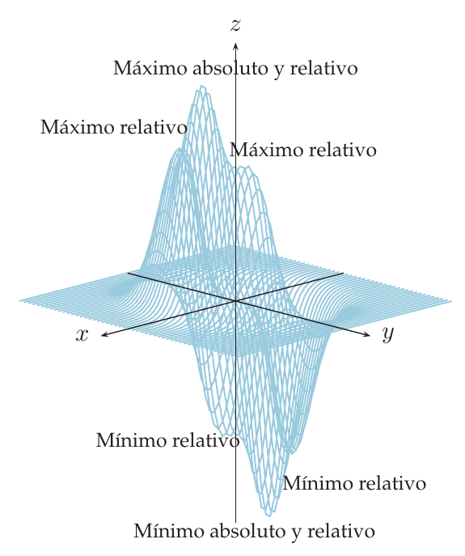
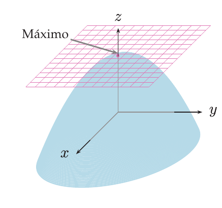
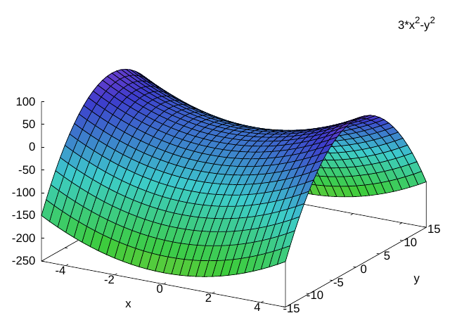
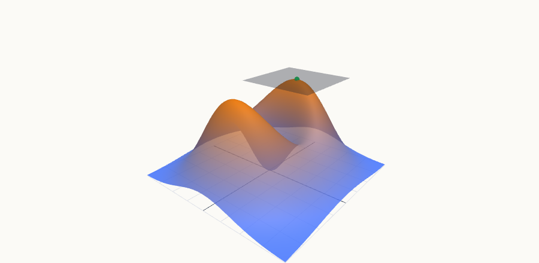
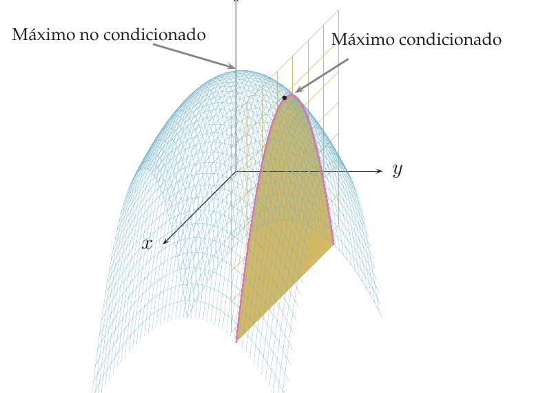
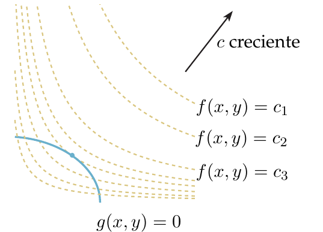
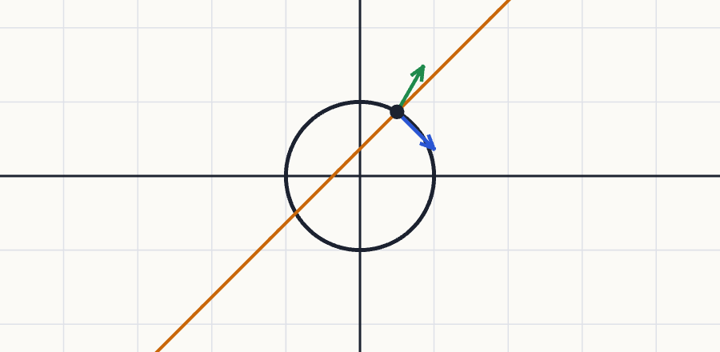
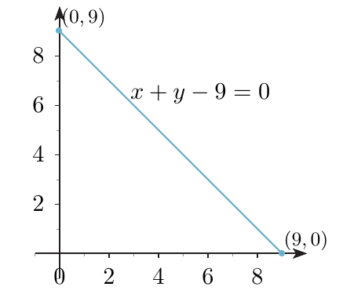
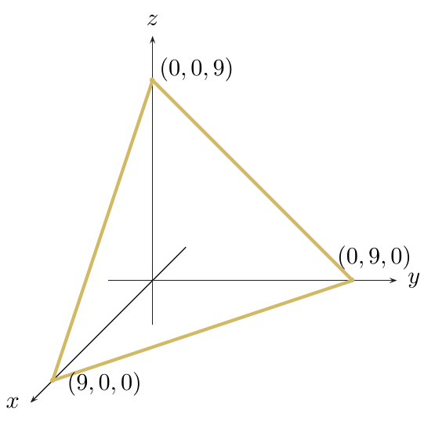

Valores extremos y extremos condicionados (Lagrange)
Cómo encontrar y clasificar los máximos y mínimos de una función de varias variables: primero «a campo abierto» (puntos críticos y matriz Hessiana), después sobre un conjunto cerrado y acotado (interior + frontera) y por último «atados» a una curva o superficie (multiplicadores de Lagrange).
0Antes de empezar U pp.212, 223
Una función de dos variables es un paisaje: $z=f(x,y)$ es la altura sobre el punto $(x,y)$. Un máximo es una cima, un mínimo es el fondo de un valle y un punto de silla es un puerto de montaña (subes por un lado y bajas por el otro). Para encontrarlos se sigue el mismo guion que con una variable: (1) se buscan los puntos con «pendiente cero» en todas las direcciones (gradiente nulo), que son los únicos candidatos; (2) se decide qué es cada uno mirando cómo se curva el terreno (matriz Hessiana). Si además solo se puede caminar por un sendero concreto (una curva $g(x,y)=0$) o por un recinto cerrado, se añade la comprobación de la frontera, y para la frontera se usa el método de Lagrange: el punto más alto de un sendero está donde el sendero deja de subir, es decir, donde es tangente a una curva de nivel.
PQué necesitas saber ya
- Derivadas parciales y gradiente (tema 4.3): $\nabla f=\left(\frac{\partial f}{\partial x},\frac{\partial f}{\partial y}\right)$, y que el gradiente es perpendicular a las curvas de nivel.
- Diferencial y plano tangente (tema 5.1): si $f$ es diferenciable, el plano tangente es $z=f(a,b)+\nabla f(a,b)\cdot(x-a,y-b)$. Será horizontal exactamente en los puntos críticos.
- Función implícita (tema 5.3): para reducir un problema condicionado a una variable despejando $y=h(x)$ de la restricción.
- Extremos de una variable (tema 3.4): $f'=0$ y $f''$; y el teorema de Weierstrass (continua en $[a,b]$ ⇒ máximo y mínimo), que aquí se generaliza.
- Sistemas de ecuaciones y casos: «un producto vale $0$ si y solo si lo vale algún factor», y $e^t\gt0$ siempre.
Mapa del tema
| Apartado | Qué contiene | Dónde está |
|---|---|---|
| 1 Extremos absolutos y relativos | definiciones; Ej. 5.15, 5.16 | U pp.213-215 |
| 2 Puntos críticos | $\nabla f=\bar0$; Ej. 5.17, 5.18 | U pp.216-217 |
| 3 Condición necesaria y punto de silla | solo los críticos pueden ser extremos; Ej. 5.19 | U pp.218-219 |
| 4 Condición suficiente: la Hessiana | criterio $d$, $r$; Ej. 5.20 | U pp.220-222 |
| 5 Teorema de los valores extremos | extremos absolutos en un compacto; Ej. 5.21 | U pp.222-223 |
| 6 Extremos condicionados: despejar | Ej. 5.22 (frontera de un disco) | U pp.223-225 |
| 7 Multiplicadores de Lagrange | teorema, demostración geométrica, método | U pp.226-228 |
| 8 Ejemplos de U con Lagrange | Ej. 5.23-5.26 | U pp.226-232 |
| 9 Recetas | qué hacer ante cada tipo de pregunta | síntesis |
| 10 Ejercicios de E | 5.28-5.48 (21 ejercicios) | E pp.191-212 |
| 11 Ejemplos propios | 5 ejemplos | propio |
| 12 Examen | 6 problemas de X (y 6 más que repiten E) | X |
| 13 Chuleta y comprobación | fórmulas, errores, lista | síntesis |
Qué se pide en los ejercicios y en el examen
(A) Puntos críticos: resolver $\nabla f=\bar0$ (E 5.29, 5.30, 5.35; X Feb 2018). (B) Clasificarlos con la Hessiana (E 5.31, 5.32, 5.34, 5.36, 5.37; X Feb 2018, Feb 2014, Feb 2011). (C) Extremos absolutos: «¿existen?» (teorema de los valores extremos, E 5.38; X Sept 2018) y «¿dónde están?» (interior + frontera; E 5.41, 5.43, 5.48; X Feb 2017, Feb 2016). (D) Lagrange con una restricción, en $\mathbb R^2$ y en $\mathbb R^3$ (E 5.39-5.47; X Sept 2017, Feb 2013, Feb 2012, p. 9). En el examen este tema suele ser el Ejercicio 6 (3 puntos de 10). Resolver el sistema es la parte difícil: no hay regla general (U p.216).
1Extremos absolutos y relativos U pp.213-215
En un mapa montañoso, el máximo absoluto es la cumbre más alta de toda la región (el Everest). Un máximo relativo es una cumbre que solo es la más alta de su entorno: si estás en lo alto de un cerro, a tu alrededor todo es más bajo, aunque a lo lejos haya montañas mayores. Todo máximo absoluto es también relativo, pero no al revés. Con los mínimos (fondos de valle) igual.
PSea $f:D\subset\mathbb R^2\to\mathbb R$. Alcanza un máximo absoluto en $(a,b)$ si $f(x,y)\le f(a,b)$ para todo $(x,y)\in D$, y un mínimo absoluto si $f(x,y)\ge f(a,b)$ para todo $(x,y)\in D$. Se llaman, juntos, extremos absolutos. En $\mathbb R^n$: $f(x_1,\dots,x_n)\le f(a_1,\dots,a_n)$ (o $\ge$) para todo punto de $D$. Si las desigualdades son estrictas (salvo en el propio punto), el extremo es estricto.
U p.213$f$ alcanza un máximo relativo en $(a,b)$ si existe un disco abierto $A$ con $(a,b)\in A$ tal que $f(x,y)\le f(a,b)$ para todo $(x,y)\in A\cap D$. Mínimo relativo: igual con $f(x,y)\ge f(a,b)$. Juntos, extremos relativos; en $\mathbb R^n$ se usa una bola en lugar del disco. Si las desigualdades son estrictas, son estrictos.
U p.214- Mínimo: $f(x,y)=x^2+y^2\ge0$ y vale $0$ solo si $x=y=0$. Luego en $(0,0)$ hay un mínimo absoluto estricto.
- Máximo: para cualquier número $t\gt0$, en el punto $(0,\sqrt t)$ la función vale $t$, y se pueden tomar valores tan grandes como se quiera. Ningún valor es el mayor: no hay máximo absoluto.
La función del ejemplo, $f(x,y)=15\left(x^3+xy^4\right)e^{-(x^2+y^2)}$ (representada en la Figura 5.9, para $(x,y)\in[-4,4]\times[-4,4]$) alcanza tres máximos relativos, uno de ellos también absoluto, y tres mínimos relativos, uno de ellos el mínimo absoluto.

(i) Confundir «relativo» con «absoluto»: que un punto gane a sus vecinos no significa que gane a todos. (ii) Pensar que un extremo absoluto siempre existe: $x^2+y^2$ no tiene máximo. (iii) Decir que los extremos son únicos: puede haber varios puntos con el mismo valor máximo (E 5.28 tiene infinitos mínimos).
P2Puntos críticos U pp.216-217
En una variable, los extremos de una función derivable están donde la tangente es horizontal: $f'(a)=0$. En dos variables es lo mismo, pero en todas las direcciones: el plano tangente debe ser horizontal, es decir, las dos pendientes (en la dirección $x$ y en la dirección $y$) valen $0$. Esos puntos se llaman críticos y son los candidatos. Encontrarlos es resolver un sistema de dos ecuaciones, y esa es la parte difícil: no hay regla general (U p.216) y a veces exige ingenio.
U p.216Una función regular $f:D\subset\mathbb R^2\to\mathbb R$ tiene un punto crítico en $(a,b)$ si se anulan sus derivadas parciales: $$\frac{\partial f}{\partial x}(a,b)=\frac{\partial f}{\partial y}(a,b)=0,\qquad\text{es decir,}\qquad\nabla f(a,b)=(0,0).$$ En $\mathbb R^n$: $\nabla f(a_1,\dots,a_n)=\bar0$.
Si $f$ no fuese regular, los puntos críticos son también aquellos donde la función no está definida o no es diferenciable.
U p.216$f\ge0$ y $f(0,0)=0$: en el origen hay un mínimo absoluto (un cono con la punta hacia abajo). Pero $f$ no es diferenciable en $(0,0)$ (la punta no tiene plano tangente), así que ahí no hay gradiente que anular: el origen es un punto crítico en el sentido de «no diferenciable». Fuera del origen, $\nabla f=\left(\frac x{\sqrt{x^2+y^2}},\frac y{\sqrt{x^2+y^2}}\right)$ nunca se anula. Moraleja: en un punto donde $f$ no es diferenciable, la condición necesaria no se aplica y hay que estudiarlo a mano.
P- Derivadas (producto: derivada del polinomio por la exponencial, más el polinomio por la derivada de la exponencial, que lleva $-2x$ o $-2y$): $$f_x=2x\,(1-x^2-2y^2)\,e^{1-(x^2+y^2)},\qquad f_y=2y\,(2-x^2-2y^2)\,e^{1-(x^2+y^2)}.$$
- Quitar la exponencial: como $e^t\gt0$ siempre, $f_x=0\iff x(1-x^2-2y^2)=0$ y $f_y=0\iff y(2-x^2-2y^2)=0$.
- Casos (cada ecuación es un producto igual a $0$):
- $x=0$ e $y=0$: el punto $(0,0)$.
- $x=0$, $y\ne0$: la 2.ª da $2-2y^2=0$, $y=\pm1$: puntos $(0,\pm1)$.
- $y=0$, $x\ne0$: la 1.ª da $1-x^2=0$, $x=\pm1$: puntos $(\pm1,0)$.
- $x\ne0$, $y\ne0$: tendría que ser a la vez $x^2+2y^2=1$ y $x^2+2y^2=2$: imposible.
- Puntos críticos: $(0,0)$, $(\pm1,0)$ y $(0,\pm1)$ (cinco puntos). Se clasifican en el apartado 4 (Ej. 5.20).
$f(x,y)=\dfrac{x^2y^2}{x^2+y^2}$ si $(x,y)\ne(0,0)$ y $f(0,0)=0$.
- Fuera del origen: $f_x=\dfrac{2xy^4}{(x^2+y^2)^2}$, $\ f_y=\dfrac{2x^4y}{(x^2+y^2)^2}$.
- El denominador es positivo. Ambas se anulan si y solo si $x=0$ o $y=0$: todos los puntos de los ejes son críticos.
- Para entenderlo: en los ejes $f=0$ y fuera de ellos $f\gt0$; así que todos son mínimos (no estrictos). Aquí la Hessiana no hace falta: basta mirar el signo.
3Condición necesaria y punto de silla U pp.218-220
Sea $f:D\subset\mathbb R^2\to\mathbb R$ una función diferenciable en el abierto $D$. Si $f$ alcanza un extremo relativo en $(a,b)\in D$, entonces $\nabla f(a,b)=\bar0$. Vale también en $\mathbb R^n$.
Por qué (idea de la demostración de U): se «corta» la superficie con el plano $y=b$ y con el plano $x=a$. Si $(a,b)$ es un máximo, la curva $F(x)=f(x,b)$ de una variable tiene un máximo en $x=a$, luego $F'(a)=f_x(a,b)=0$; igual con $G(y)=f(a,y)$ y $G'(b)=f_y(a,b)=0$.
U p.218
El teorema descarta: si el gradiente no es nulo en un punto, ahí no hay extremo (hay una dirección en la que sube y otra en la que baja). Pero no es recíproco: que el gradiente se anule no garantiza nada. Para conocer la naturaleza del punto hace falta la condición suficiente (apartado 4). Además, el teorema exige que el dominio sea abierto: los extremos de la frontera no tienen por qué ser críticos (apartados 5-7).
PUn punto crítico que no es extremo relativo se llama punto de silla (también «de ensilladura» o «estacionario»). Alrededor de él hay puntos con valor mayor y puntos con valor menor. Es la forma de un puerto de montaña: de un lado hacia otro de la cordillera subes, y a lo largo de ella bajas.
U p.219- $\nabla f=(6x,-2y)=(0,0)\iff x=y=0$: el único punto crítico es $(0,0)$, con $f(0,0)=0$.
- Sobre el eje $x$: $f(x,0)=3x^2\gt0$ (por encima de $f(0,0)$). Sobre el eje $y$: $f(0,y)=-y^2\lt0$ (por debajo).
- Hay puntos tan cerca como se quiera con valores mayores y menores: no es extremo; es punto de silla.

«Gradiente cero ⇒ extremo.» Falso: $3x^2-y^2$ tiene gradiente nulo en el origen y es una silla. (Es una pregunta clásica de verdadero o falso: «$f$ diferenciable con $\nabla f(a,b)=\bar0$ ⇒ extremo relativo», falso; X p.140, feb. 2018, 2.ª semana.)
P4Condición suficiente: la matriz Hessiana U pp.220-222
En una variable, en un punto con $f'=0$ la segunda derivada decide: $f''\gt0$ es un cuenco (mínimo), $f''\lt0$ es una cúpula (máximo). En dos variables hay tres segundas derivadas que importan: la curvatura en la dirección $x$ ($f_{xx}$), en la dirección $y$ ($f_{yy}$) y la «torsión» cruzada $f_{xy}$. Se organizan en la Hessiana. Cuando $f_{xy}=0$ es sencillo: si las dos curvaturas son positivas, cuenco (mínimo); si las dos son negativas, cúpula (máximo); si una es positiva y otra negativa, silla. El número $d=f_{xx}f_{yy}-f_{xy}^2$ resume esto aunque $f_{xy}\ne0$: $d\gt0$ significa que $f_{xx}$ y $f_{yy}$ tienen el mismo signo y que el suelo se curva igual en todas las direcciones (cuenco o cúpula); $d\lt0$ significa que en alguna dirección sube y en otra baja. Ojo: esas direcciones no tienen por qué ser las de los ejes $x$ e $y$. Por ejemplo, $x^2+4xy+y^2$ tiene $f_{xx}=f_{yy}=2\gt0$ pero $d=4-16=-12\lt0$: es una silla (sube a lo largo de $y=x$ y baja a lo largo de $y=-x$, donde vale $-2t^2$).
PSea $f:D\subset\mathbb R^2\to\mathbb R$ con un punto crítico en $(a,b)$. Se llama matriz Hessiana de $f$ en $(a,b)$ a $$Hf(a,b)=\begin{pmatrix}\dfrac{\partial^2f}{\partial x^2}&\dfrac{\partial^2f}{\partial x\partial y}\\[2mm]\dfrac{\partial^2f}{\partial y\partial x}&\dfrac{\partial^2f}{\partial y^2}\end{pmatrix}(a,b)=\begin{pmatrix}r&s\\t&u\end{pmatrix},\qquad d=|Hf(a,b)|=ru-st.$$ Entonces:
| Si… | entonces en $(a,b)$ hay… |
|---|---|
| $d\gt0$ y $r\gt0$ | mínimo relativo |
| $d\gt0$ y $r\lt0$ | máximo relativo |
| $d\lt0$ | punto de silla |
| $d=0$ | caso dudoso: el criterio no decide |
Si $d\gt0$, entonces $ru\gt s^2\ge0$: $r$ y $u$ son distintos de $0$ y del mismo signo (por eso el caso «$d\gt0$ y $r=0$» no puede darse). (U nota que se puede usar $u$ en lugar de $r$ y el resultado es igual de válido. Como $f_{xy}=f_{yx}$ cuando son continuas, $d=f_{xx}f_{yy}-f_{xy}^2$.) En $\mathbb R^n$ la condición usa la forma cuadrática de la Hessiana; no se trata en el curso.
U pp.220-221Primero $d$. Si $d\lt0$, silla y se acabó (no hace falta $r$). Si $d\gt0$, mirar el signo de $r$ (o de $u$: tienen el mismo signo). Si $d=0$, no se puede concluir con la Hessiana: hay que comparar $f(x,y)$ con $f(a,b)$ a mano (por ejemplo, si $f\ge f(a,b)$ en todas partes, es un mínimo; E 5.33).
P- Hessiana en cada punto crítico del Ej. 5.17 (derivando otra vez; las cuentas se comprueban con sympy):
- $Hf(0,0)=\begin{pmatrix}2e&0\\0&4e\end{pmatrix}$: $d=8e^2\gt0$, $r=2e\gt0$: mínimo relativo ($f=0$).
- $Hf(\pm1,0)=\begin{pmatrix}-4&0\\0&2\end{pmatrix}$: $d=-8\lt0$: punto de silla.
- $Hf(0,\pm1)=\begin{pmatrix}-2&0\\0&-8\end{pmatrix}$: $d=16\gt0$, $r=-2\lt0$: máximo relativo ($f=2$).
- La Hessiana es diagonal en los cinco: se lee mirando los signos de la diagonal (ambos $+$, ambos $-$, o uno de cada).

5Extremos absolutos en un conjunto cerrado y acotado U pp.222-223
Si la región es una isla (un conjunto cerrado, con su costa incluida, y acotado: no se extiende hasta el infinito), el punto más alto de la isla existe, y solo puede estar en uno de dos sitios: en una cima del interior (un punto crítico) o en la costa (la frontera). Por eso hay que mirar las dos cosas. Si olvidas la costa, puedes perder el máximo; si olvidas el interior, puedes perder un mínimo.
PSi una función continua $f$ está definida en un subconjunto $S\subset\mathbb R^n$ cerrado y acotado, entonces alcanza el máximo y el mínimo absolutos en $S$. Además, los extremos absolutos se alcanzan en la frontera de $S$ o en un punto crítico de $f$ que sea del interior de $S$.
U p.222- Existencia: $f$ continua, $S$ cerrado y acotado (decirlo).
- Interior: hallar los puntos críticos de $f$ que estén en el interior de $S$ (comprobar que lo están).
- Frontera: hallar los puntos de la frontera donde pueden alcanzarse extremos. Es el paso más difícil; se trata en §5.5 (Lagrange, o despejar y reducir a una variable; si la frontera son segmentos, una variable en cada segmento más los vértices).
- Comparar: evaluar $f$ en todos los candidatos; el mayor valor es el máximo absoluto y el menor, el mínimo absoluto. No hace falta la Hessiana.
- $f$ es continua y $S$ es cerrado y acotado: existen máximo y mínimo absolutos.
- Interior: $\nabla f=(2x,4y)=(0,0)\iff(x,y)=(0,0)$, que es un punto del interior con $f(0,0)=0$.
- Como $f\ge0$ en todas partes, $0$ es el mínimo absoluto, en $(0,0)$.
- El máximo no está en el interior (el único crítico es el mínimo): tiene que estar en la circunferencia $x^2+y^2=1$. Se estudia en el apartado siguiente (U Ej. 5.22) y de nuevo con Lagrange (Ej. 5.24).
(i) Dar como máximo/mínimo absoluto un extremo relativo del interior sin comparar con la frontera. (ii) Aplicar el teorema a un conjunto que no es cerrado (p. ej. $1\lt x^2+y^2\le4$ no incluye la circunferencia interior) o no es acotado. (iii) Creer que, si no se cumplen las hipótesis, «no hay máximo»: es condición suficiente; sin ella no se puede asegurar nada con el teorema. (iv) Dar como candidatos puntos críticos que están en la frontera, o fuera de $S$.
P6Extremos condicionados: primera idea, despejar U pp.223-225
Un extremo condicionado es un máximo o mínimo de $f$ cuando solo se permite moverse por un conjunto dado por una condición $g(x,y)=0$: la costa de una isla, un sendero, una carretera. El máximo «a campo abierto» y el máximo «sobre el sendero» son cosas distintas (Figura 5.12 de U): el sendero puede no pasar por la cima. La primera forma de resolverlo es la más natural: si la condición permite despejar una variable ($y=h(x)$), se sustituye y se vuelve al caso de una variable.
P- La frontera es $g(x,y)=x^2+y^2-1=0$. Donde $\frac{\partial g}{\partial y}=2y\ne0$ se puede despejar $y=\pm\sqrt{1-x^2}$ (teorema de la función implícita, tema 5.3).
- Sustituir: $f(x,y)=x^2+2y^2=x^2+2(1-x^2)=2-x^2=:F(x)$, para $x\in(-1,1)$.
- Una variable: $F'(x)=-2x=0\iff x=0$, y entonces $y=\pm1$: candidatos $(0,\pm1)$.
- Donde no se puede despejar ($\frac{\partial g}{\partial y}=0$, es decir $y=0$): los puntos $(\pm1,0)$, que se estudian aparte.
- Valores: $f(0,0)=0$ (interior, Ej. 5.21), $f(\pm1,0)=1$, $f(0,\pm1)=2$.
- Conclusión: el máximo absoluto en el disco es $2$, en $(0,\pm1)$. El mínimo absoluto es $0$, en $(0,0)$. (Sobre la circunferencia sola, el mínimo condicionado es $1$ en $(\pm1,0)$.)

Despejar solo funciona si se sabe (y se puede) despejar, y deja casos aparte. Cuando la condición es complicada, el conjunto no es cerrado o acotado, o intervienen más variables, hace falta un método sistemático: Lagrange.
U p.2257El método de los multiplicadores de Lagrange U pp.226-228
Dibuja las curvas de nivel de $f$ (los «contornos» del mapa topográfico) y la curva $g=0$ (tu sendero). Al caminar por el sendero cruzas contornos: subes cuando pasas a uno más alto y bajas cuando pasas a uno más bajo. Estás en lo más alto del sendero cuando ya no cruzas más contornos hacia arriba: el sendero llega a un contorno, lo roza (sin cruzarlo) y se aleja. En ese punto el sendero y el contorno son tangentes. Como el gradiente es perpendicular al contorno y $\nabla g$ lo es al sendero, tangentes significa que los dos gradientes apuntan en la misma dirección o en direcciones opuestas: $\nabla f$ es un múltiplo de $\nabla g$. Ese múltiplo es el multiplicador $\lambda$.
U p.227Sean $f$ y $g$ funciones continuas con derivadas parciales continuas. Supongamos que $f$ tiene un extremo relativo en $(a,b)$ sobre la curva $g(x,y)=0$ y que $\nabla g(a,b)\ne\bar0$. Entonces existe un número $\lambda$ tal que $$\nabla f(a,b)=-\lambda\,\nabla g(a,b).$$ Equivalentemente, $(a,b,\lambda)$ es un punto crítico de la función $F(x,y,\lambda)=f(x,y)+\lambda\,g(x,y)$ (porque $\nabla F=\bar0$ dice $F_x=F_y=0$, que es $\nabla f=-\lambda\nabla g$, y $F_\lambda=g=0$, que es la restricción). El número $\lambda$ es el multiplicador de Lagrange.
Versión en $\mathbb R^n$ (U p. 228): $f,g:D\subset\mathbb R^n\to\mathbb R$ continuas con derivadas parciales continuas; si $f$ tiene un extremo relativo en $(a_1,\dots,a_n)$ sobre $g(x_1,\dots,x_n)=0$ y $\nabla g(a_1,\dots,a_n)\ne\bar0$, existe $\lambda$ con $\nabla f(a_1,\dots,a_n)=-\lambda\nabla g(a_1,\dots,a_n)$.
U pp.226, 228
Para hallar los extremos de $f(x,y)$ sujeta a $g(x,y)=0$:
- Definir $F(x,y,\lambda)=f(x,y)+\lambda\,g(x,y)$.
- Resolver $\nabla F(x,y,\lambda)=(0,0,0)$, es decir, $F_x=0$, $F_y=0$ y $g=0$. Son los puntos críticos de $F$ y los candidatos.
- Si el conjunto $g=0$ es cerrado y acotado, evaluar $f$ en los puntos del paso 2: donde $f$ sea mayor está el máximo absoluto, y donde sea menor, el mínimo absoluto. (Si no es cerrado y acotado, el método solo da candidatos; para decidir se usa el sentido del problema, o se despeja.)
- Alternativa: si $g=0$ define $y=h(x)$, se estudian los extremos de $f(x,h(x))$ (una variable). En tres variables, si $g=0$ define $z=h(x,y)$, se puede estudiar la Hessiana de $f(x,y,h(x,y))$ con el criterio del apartado 4 (U p.231).
Vale igual en $\mathbb R^n$ (una ecuación más por variable). Con más de una condición se añade un multiplicador por cada una. Siempre hay que comprobar que $\nabla g\ne\bar0$ en los puntos de la restricción.
U pp.228-229
(i) Olvidar la ecuación de la restricción ($F_\lambda=g=0$): sin ella el sistema tiene infinitas soluciones. (ii) Dividir entre $x$, $y$ o $\lambda$ sin comprobar que no valen $0$: se pierden soluciones (el caso $\lambda=0$ en el Ej. 5.26 de U es de hecho el que da tres candidatos). (iii) Creer que Lagrange dice si es máximo o mínimo: solo da candidatos; se decide comparando valores (conjunto cerrado y acotado) o con el sentido del problema. (iv) No comprobar $\nabla g\ne\bar0$: si se anula en un punto de la restricción, el teorema no se aplica allí y ese punto se añade a mano como candidato (Propio 5, apartado 11). (v) Pensar que el signo de $\lambda$ decide el tipo de punto: no es así (el valor de $\lambda$ no importa para localizar los extremos).
P8Ejemplos de U resueltos con Lagrange U pp.226-232
Se quiere una lata cilíndrica cerrada de volumen $300\ \mathrm{ml}$ con la menor cantidad de material. Variables $r$ (radio) y $h$ (altura): volumen $V(r,h)=\pi r^2h$ y superficie $S(r,h)=2\pi r^2+2\pi rh$. El problema es: minimizar $S$ con la restricción $\pi r^2h=300$. La resolución completa está en el Ejercicio 5.40 (apartado 10).
U p.226- $g=x^2+y^2-1$, $\nabla g=(2x,2y)\ne\bar0$ en la circunferencia. $F=x^2+2y^2+\lambda(x^2+y^2-1)$.
- $F_x=2x(1+\lambda)=0$, $\ F_y=2y(2+\lambda)=0$, $\ x^2+y^2=1$.
- Casos: $\lambda=-1\Rightarrow y=0$, $x=\pm1$. $\ \lambda=-2\Rightarrow x=0$, $y=\pm1$. (Si $\lambda\ne-1$ y $\lambda\ne-2$, $x=y=0$, que no está en la restricción.)
- Candidatos: $(\pm1,0)$ con $\lambda=-1$ y $(0,\pm1)$ con $\lambda=-2$: los mismos que al despejar (Ej. 5.22), sin tener que «añadir a mano» los puntos donde no se podía despejar. Valores: $f(\pm1,0)=1$ (mínimo condicionado) y $f(0,\pm1)=2$ (máximo condicionado).

- $f(x,y)=xy$, $g(x,y)=x+y-9$, con $x,y\ge0$. El conjunto es el segmento de la figura: cerrado y acotado, así que el máximo existe y está entre los candidatos (puntos críticos de $F$ o extremos del segmento).
- $F=xy+\lambda(x+y-9)$: $F_x=y+\lambda=0$, $F_y=x+\lambda=0$, $x+y=9$.
- La única solución es $x=y=\frac92$, $\lambda=-\frac92$, con $f\left(\frac92,\frac92\right)=\frac{81}4$.
- En los extremos del segmento, $f(9,0)=f(0,9)=0$.
- Máximo en $\left(\frac92,\frac92\right)$, con producto $\frac{81}4$.

- $f=xyz$, $g=x+y+z-9$, con $x,y,z\ge0$ (un triángulo en el espacio: cerrado y acotado). $F=xyz+\lambda(x+y+z-9)$.
- $F_x=yz+\lambda=0$, $F_y=xz+\lambda=0$, $F_z=xy+\lambda=0$, $x+y+z=9$.
- Caso $\lambda=0$: $yz=xz=xy=0$: al menos dos de las variables valen $0$; con la suma $9$, salen $(9,0,0)$, $(0,9,0)$ y $(0,0,9)$, con producto $0$.
- Caso $\lambda\ne0$: ninguna variable es $0$; de $yz=xz$ sale $x=y$ y de $xz=xy$ sale $y=z$. Con la suma, $x=y=z=3$ y $\lambda=-9$, con $f=27$.
- Producto máximo $27$ en $x=y=z=3$.
9Recetas del tema P
- Calcular $f_x$, $f_y$ e igualarlas a $0$. Resolver el sistema por casos (factor común; «producto $=0$ ⇒ algún factor $=0$»). Así salen los puntos críticos, los únicos candidatos.
- Calcular $f_{xx}$, $f_{xy}$, $f_{yy}$ y, en cada punto crítico, $d=f_{xx}f_{yy}-f_{xy}^2$ y $r=f_{xx}$.
- Clasificar: $d\lt0$ silla; $d\gt0$ y $r\gt0$ mínimo; $d\gt0$ y $r\lt0$ máximo; $d=0$ dudoso (mirar a mano el signo de $f-f(a,b)$).
- Añadir como candidatos los puntos donde $f$ no está definida o no es diferenciable (p. ej. la punta de un cono), y estudiarlos a mano.
- Si piden «¿es extremo en estos puntos?»: primero gradiente en cada punto dado (descartar los no críticos).
- $f$ continua y $S$ cerrado y acotado ⇒ existen (citar el teorema).
- Puntos críticos del interior de $S$.
- Frontera: Lagrange, o parametrizar/despejar y reducir a una variable; si la frontera es un polígono, cada lado como función de una variable (críticos + extremos del intervalo = vértices).
- Tabla con todos los candidatos y sus valores; máximo y mínimo = mayor y menor.
- $F=f+\lambda g$ y comprobar $\nabla g\ne\bar0$ en la restricción; los puntos de $g=0$ donde $\nabla g=\bar0$ se añaden a mano como candidatos.
- Resolver $F_x=0$, $F_y=0$ ($F_z=0$) y $g=0$. Trucos: despejar $\lambda$ en dos ecuaciones e igualar; multiplicar cada ecuación por su variable; restar ecuaciones simétricas; separar siempre los casos «variable $=0$» y «$\lambda=0$».
- Si la restricción es cerrada y acotada: comparar los valores de $f$. Si no: usar el sentido del problema o despejar y pasar a una variable (E 5.40).
- Problemas de distancia: optimizar el cuadrado de la distancia (sin raíz) y poner la raíz al final.
10Ejercicios del libro, resueltos E pp.191-212
Orden recomendado para aprender (de lo más sencillo a lo más largo): sin derivadas (5.28, 5.38, 5.33) → puntos críticos (5.29, 5.30, 5.35) → Hessiana (5.31, 5.32, 5.37, 5.36, 5.34) → Lagrange (5.44, 5.39, 5.42, 5.40, 5.46, 5.47) → absolutos en un compacto (5.41, 5.43, 5.48) → una variable (5.45).
Índice rápido: 5.28 · 5.29 · 5.30 · 5.31 · 5.32 · 5.33 · 5.34 · 5.35 · 5.36 · 5.37 · 5.38 · 5.39 · 5.40 · 5.41 · 5.42 · 5.43 · 5.44 · 5.45 · 5.46 · 5.47 · 5.48.
A · Sin derivadas: signo y teorema
Ejercicio 5.28 · ¿extremos absolutos de $y^2x^2+y^2+4\operatorname{sen}^2x$? E p.191
¿Alcanza la función $f(x,y)=y^2x^2+y^2+4\operatorname{sen}^2x$ los valores mínimo y máximo absolutos en $\mathbb R^2$?
- Qué me piden
- Decidir si existe un punto donde $f$ es la menor de todas y otro donde es la mayor.
- Cómo lo pienso
- Los tres sumandos son cuadrados (o múltiplos positivos de cuadrados): $f\ge0$. Si llega a valer $0$, ese es el mínimo. Para el máximo, buscar una recta por la que $f$ crezca sin límite.
- Qué uso
- Definiciones de máximo y mínimo absolutos (U Def. 5.7-5.8, p. 213).
- Por dónde empiezo
- Ver cuándo vale $0$ cada sumando.
- Signo: $y^2x^2\ge0$, $y^2\ge0$, $4\operatorname{sen}^2x\ge0$. Luego $f(x,y)\ge0$ para todo $(x,y)$.
- ¿Cuándo vale $0$? Una suma de números $\ge0$ es $0$ solo si cada sumando es $0$: $y^2=0\Rightarrow y=0$; $\operatorname{sen}x=0\Rightarrow x=k\pi$, $k\in\mathbb Z$ (el primer sumando ya es $0$ con $y=0$).
- Mínimo absoluto: $f(k\pi,0)=0\le f(x,y)$ para todo $(x,y)$: por la Def. 5.8, $f$ alcanza el mínimo absoluto $0$ en todos los puntos $(k\pi,0)$, $k\in\mathbb Z$ (infinitos puntos).
- Máximo absoluto: sobre el eje $x=0$, $f(0,y)=y^2$, que supera cualquier número $M$ (basta $y=\sqrt M+1$). Si hubiera máximo $f(a,b)$, tomando $M=f(a,b)$ habría un punto con valor mayor: contradicción. No hay máximo absoluto.
Concluir «no hay máximo porque $\mathbb R^2$ no es acotado»: el teorema de los valores extremos da una condición suficiente; si no se cumple, no se puede concluir nada sin más (p. ej. $e^{-x^2-y^2}$ sí tiene máximo en $\mathbb R^2$).
Ejercicio 5.38 · ¿alcanza $x^2y$ el máximo en el disco unidad? E p.200
La función $f(x,y)=x^2y$ está definida sobre el conjunto $S=\{(x,y)\in\mathbb R^2:x^2+y^2\le1\}$. ¿Alcanza el máximo absoluto en este conjunto? Justifica la respuesta.
- Qué me piden
- Solo si existe el máximo, no cuánto vale.
- Cómo lo pienso
- Es exactamente la situación del teorema de los valores extremos: función continua sobre un disco cerrado.
- Qué uso
- Teorema de los valores extremos (U p. 222).
- Por dónde empiezo
- Comprobar las tres hipótesis.
- $f$ es continua: es un polinomio.
- $S$ es cerrado: contiene su frontera, la circunferencia $x^2+y^2=1$ (el «$\le$» la incluye).
- $S$ es acotado: todos sus puntos están a distancia $\le1$ del origen.
- Por el teorema de los valores extremos, sí: $f$ alcanza en $S$ el máximo y el mínimo absolutos.
Para ir más allá (no se pide): en el interior, $\nabla f=(2xy,x^2)=\bar0$ solo en $x=0$, donde $f=0$. En la frontera, $x^2=1-y^2$ y $f=(1-y^2)y$; su derivada $1-3y^2$ se anula en $y=\pm\frac1{\sqrt3}$. El máximo es $\frac{2\sqrt3}9$ en $\left(\pm\sqrt{2/3},\,\frac1{\sqrt3}\right)$ y el mínimo $-\frac{2\sqrt3}9$ en $\left(\pm\sqrt{2/3},\,-\frac1{\sqrt3}\right)$.
Contestar calculando los puntos críticos del interior y decir «no hay máximo porque en el interior no hay extremos»: el máximo puede estar en la frontera.
Ejercicio 5.33 · tipo de punto de $x^2\operatorname{sen}^2y$ en el origen E pp.195-196
La función de dos variables dada por $f(x,y)=x^2\operatorname{sen}^2y$ verifica: a) Alcanza en $(0,0)$ un mínimo relativo. b) Alcanza en $(0,0)$ un máximo relativo. c) Tiene en $(0,0)$ un punto de silla. d) Ninguna de las opciones anteriores.
- Qué me piden
- Qué tipo de punto es $(0,0)$.
- Cómo lo pienso
- La Hessiana puede no decidir (todo es «muy plano» en el origen); pero $f$ es un producto de cuadrados: nunca es negativa.
- Qué uso
- Condición suficiente (U p. 220); si es dudosa, la Def. 5.11 de mínimo relativo (U p. 214).
- Por dónde empiezo
- Comprobar que $(0,0)$ es crítico.
- Gradiente: $f_x=2x\operatorname{sen}^2y$, $f_y=2x^2\operatorname{sen}y\cos y=x^2\operatorname{sen}2y$. En $(0,0)$ ambas valen $0$: es punto crítico.
- Hessiana: $Hf(x,y)=\begin{pmatrix}2\operatorname{sen}^2y&2x\operatorname{sen}2y\\2x\operatorname{sen}2y&2x^2\cos2y\end{pmatrix}$; en $(0,0)$ es la matriz nula, $d=0$: caso dudoso, el criterio no dice nada.
- Mirar el signo: $f(0,0)=0$ y $f(x,y)=x^2\operatorname{sen}^2y\ge0$ siempre (producto de dos cuadrados).
- Entonces $f(x,y)\ge f(0,0)$ para todo $(x,y)$: mínimo absoluto, y por tanto relativo. Respuesta a).
Elegir d) («no se puede saber») porque la Hessiana es nula. «Dudoso» significa que el criterio no decide, no que el punto no sea extremo.
B · Hallar puntos críticos
Ejercicio 5.29 · críticos de $x^3+y^3+xy$ E pp.191-192
Localiza los puntos en los que la función dada por $f(x,y)=x^3+y^3+xy$ puede alcanzar los extremos relativos.
- Qué me piden
- Los candidatos, es decir, los puntos críticos (no clasificarlos).
- Cómo lo pienso
- $f$ es un polinomio, diferenciable en todo $\mathbb R^2$ (abierto): los extremos relativos solo pueden estar donde $\nabla f=\bar0$.
- Qué uso
- Condición necesaria de extremo (U p. 218).
- Por dónde empiezo
- Despejar $y$ en $f_x=0$, que queda «limpio».
- $f_x=3x^2+y$, $f_y=3y^2+x$. Sistema: $3x^2+y=0$, $3y^2+x=0$.
- De la 1.ª, $y=-3x^2$. Se sustituye en la 2.ª: $3\cdot9x^4+x=0\iff x(27x^3+1)=0$.
- Producto nulo: $x=0$ o $27x^3=-1\iff x=-\frac13$ (raíz cúbica real única).
- Se vuelve a $y=-3x^2$: $x=0\Rightarrow y=0$; $x=-\frac13\Rightarrow y=-3\cdot\frac19=-\frac13$.
- Puntos críticos: $(0,0)$ y $\left(-\frac13,-\frac13\right)$.
Para ir más allá: $Hf=\begin{pmatrix}6x&1\\1&6y\end{pmatrix}$; en $(0,0)$, $d=-1$: silla; en $\left(-\frac13,-\frac13\right)$, $d=4-1=3\gt0$, $r=-2\lt0$: máximo relativo.
Dividir entre $x$ en $27x^4+x=0$ y perder la solución $x=0$.
Ejercicio 5.30 · críticos de $xy(x^2+y^2)$ E pp.192-193
Determina los puntos críticos de la función dada por $f(x,y)=xy\,(x^2+y^2)$.
- Qué me piden
- Los puntos con $\nabla f=\bar0$.
- Cómo lo pienso
- Las dos derivadas salen con un factor $y$ y otro $x$; lo que queda son sumas de cuadrados, que solo se anulan en el origen.
- Qué uso
- Def. 5.13 (U p. 216).
- Por dónde empiezo
- Desarrollar $f=x^3y+xy^3$ y derivar.
- $f_x=3x^2y+y^3=y(3x^2+y^2)$ y $f_y=x^3+3xy^2=x(x^2+3y^2)$.
- Si $x=0$: la 1.ª queda $y^3=0$, luego $y=0$.
- Si $y=0$: la 2.ª queda $x^3=0$, luego $x=0$.
- Si $x\ne0$ e $y\ne0$: tendría que ser $3x^2+y^2=0$, pero es una suma de cuadrados con $x\ne0$: es $\gt0$. Imposible.
- Único punto crítico: $(0,0)$.
Para entenderlo: $f(0,0)=0$ y $f$ tiene el signo de $xy$: positiva en el 1.er y 3.er cuadrantes y negativa en los otros dos. Es un punto de silla (la Hessiana es nula: el criterio no decide; se ve por el signo).
Olvidar algún caso o dar por soluciones $(x,0)$ sin comprobar la otra ecuación.
Ejercicio 5.35 · $\nabla f(\pi,0)$ y el origen de $x(1-\cos y)+y(1-\cos x)+xy$ E pp.197-198
Sea $f:\mathbb R^2\to\mathbb R$, $f(x,y)=x(1-\cos y)+y(1-\cos x)+xy$. Calcula $\nabla f(\pi,0)$; ¿es $(\pi,0)$ un punto crítico? Estudia si en $(0,0)$ la función $f$ alcanza un extremo relativo.
- Qué me piden
- Un gradiente en un punto, y clasificar el origen.
- Cómo lo pienso
- El origen será crítico; la Hessiana dirá su tipo. El término $xy$ (silla clásica) hace sospechar que es silla.
- Qué uso
- Def. 5.13 (U p. 216) y condición suficiente (U p. 220).
- Por dónde empiezo
- Derivar término a término.
- $f_x=(1-\cos y)+y\operatorname{sen}x+y$, $\quad f_y=x\operatorname{sen}y+(1-\cos x)+x$.
- En $(\pi,0)$: $f_x=0+0+0=0$; $f_y=0+(1-\cos\pi)+\pi=2+\pi$. $\nabla f(\pi,0)=(0,\,2+\pi)\ne\bar0$: no es crítico.
- En $(0,0)$: $f_x=0$, $f_y=0$: sí es crítico.
- Derivadas segundas: $f_{xx}=y\cos x$, $f_{xy}=\operatorname{sen}y+\operatorname{sen}x+1$, $f_{yy}=x\cos y$. En $(0,0)$: $Hf(0,0)=\begin{pmatrix}0&1\\1&0\end{pmatrix}$.
- $d=0\cdot0-1\cdot1=-1\lt0$: punto de silla, no hay extremo relativo en $(0,0)$.
Para entenderlo: cerca del origen $1-\cos t\approx\frac{t^2}2$, así que $f\approx xy$: positiva en la diagonal $y=x$ y negativa en $y=-x$.
Ver $r=0$ y decir «caso dudoso». Lo primero es mirar $d$: si $d\lt0$ es silla, valga lo que valga $r$.
C · Clasificar con la Hessiana
Ejercicio 5.31 · $x^3+y^2-xy$ en tres puntos; ¿absolutos? E pp.193-194
Sea $f(x,y)=x^3+y^2-xy$. Estudia si la función alcanza sus extremos relativos en los puntos $(0,0)$, $(1,-1)$ y $\left(\frac16,\frac1{12}\right)$ y, en caso de que así sea, razona si son máximos o mínimos. ¿Es alguno de estos puntos un extremo absoluto de $f$ en $\mathbb R^2$? ¿Se alcanzan en $\mathbb R^2$ extremos absolutos?
- Qué me piden
- (1) Cuáles de los tres puntos son críticos; (2) clasificarlos; (3) decidir si hay extremos absolutos.
- Cómo lo pienso
- Un punto no crítico no puede ser extremo (condición necesaria). A los críticos, Hessiana. Para lo absoluto: un $x^3$ «suelto» hace que $f$ no esté acotada.
- Qué uso
- Condición necesaria (U p. 218), condición suficiente (U p. 220), Def. 5.7-5.8 (U p. 213).
- Por dónde empiezo
- Hallar todos los puntos críticos.
- $f_x=3x^2-y$, $f_y=2y-x$.
- De $f_y=0$: $x=2y$. En $f_x=0$: $12y^2-y=y(12y-1)=0$, $y=0$ o $y=\frac1{12}$. Puntos críticos: $(0,0)$ y $\left(\frac16,\frac1{12}\right)$.
- $(1,-1)$: $\nabla f(1,-1)=(3+1,\,-2-1)=(4,-3)\ne\bar0$. Por la condición necesaria, no es extremo relativo.
- Hessiana: $f_{xx}=6x$, $f_{xy}=-1$, $f_{yy}=2$.
- $(0,0)$: $Hf=\begin{pmatrix}0&-1\\-1&2\end{pmatrix}$, $d=-1\lt0$: silla.
- $\left(\frac16,\frac1{12}\right)$: $Hf=\begin{pmatrix}1&-1\\-1&2\end{pmatrix}$, $d=2-1=1\gt0$ y $r=1\gt0$: mínimo relativo, con $f=\frac1{216}+\frac1{144}-\frac1{72}=-\frac1{432}$.
- ¿Absoluto? $f(-1,0)=-1\lt-\frac1{432}$: hay un valor menor, así que el mínimo relativo no es absoluto.
- Sin extremos absolutos: sobre el eje $y=0$, $f(x,0)=x^3$, que toma valores tan grandes y tan negativos como se quiera ($x\to\pm\infty$). Ningún valor puede ser el mayor ni el menor.
Clasificar $(1,-1)$ con la Hessiana sin comprobar que es crítico: el criterio solo vale en puntos críticos.
Ejercicio 5.32 · $y+x^2y^2-x^2+y^2$ E pp.194-195
Determina los puntos críticos, y estudia si se alcanza algún extremo en ellos, para la función dada por $f(x,y)=y+x^2y^2-x^2+y^2$.
- Qué me piden
- Críticos y su clasificación.
- Cómo lo pienso
- $f_x$ factoriza como $2x(y^2-1)$: dos casos, $x=0$ o $y=\pm1$; cada uno se lleva a $f_y=0$.
- Qué uso
- Def. 5.13 (U p. 216), condición suficiente (U p. 220).
- Por dónde empiezo
- Derivar y sacar factor común.
- $f_x=2xy^2-2x=2x(y^2-1)$, $\quad f_y=1+2x^2y+2y=1+2y(x^2+1)$.
- Caso $x=0$: $f_y=1+2y=0\Rightarrow y=-\frac12$. Punto $\left(0,-\frac12\right)$.
- Caso $y=1$: $f_y=1+2(x^2+1)\ge3\gt0$: sin solución.
- Caso $y=-1$: $f_y=1-2(x^2+1)=-1-2x^2\le-1\lt0$: sin solución.
- Único crítico: $\left(0,-\frac12\right)$.
- Hessiana: $f_{xx}=2y^2-2$, $f_{xy}=4xy$, $f_{yy}=2x^2+2$. En el punto: $f_{xx}=\frac12-2=-\frac32$, $f_{xy}=0$, $f_{yy}=2$.
- $d=-\frac32\cdot2-0=-3\lt0$: punto de silla; $f$ no alcanza extremos relativos.
Olvidar que $y^2=1$ da dos casos ($y=1$ e $y=-1$).
Ejercicio 5.37 · punto que minimiza la suma de distancias al cuadrado E pp.199-200
Se quieren instalar tres segmentos de cable que conecten cada uno de los puntos $A=(0,0)$, $B=(4,0)$ y $C=(1,3)$ con un punto $P=(x,y)$. Los segmentos tienen longitudes $d_1$, $d_2$ y $d_3$, respectivamente. Se busca que la suma de las tres longitudes al cuadrado, $d_1^2+d_2^2+d_3^2$, sea mínima. ¿Cuáles son las coordenadas de $P$?
- Qué me piden
- El punto $P$ que minimiza una función de dos variables.
- Cómo lo pienso
- Al elevar al cuadrado desaparecen las raíces: queda un polinomio de grado 2 («paraboloide»), con un único mínimo.
- Qué uso
- Puntos críticos (U p. 216) y Hessiana (U p. 220).
- Por dónde empiezo
- Escribir $f(x,y)$ con la fórmula de la distancia.
- $d_1^2=x^2+y^2$, $d_2^2=(x-4)^2+y^2$, $d_3^2=(x-1)^2+(y-3)^2$.
- Suma: $f(x,y)=3x^2+3y^2-10x-6y+26$.
- $f_x=6x-10=0\Rightarrow x=\frac53$; $f_y=6y-6=0\Rightarrow y=1$.
- $Hf=\begin{pmatrix}6&0\\0&6\end{pmatrix}$ en todo punto: $d=36\gt0$, $r=6\gt0$: mínimo. $P=\left(\frac53,1\right)$, con $f=\frac{44}3$.
Para entenderlo: $\left(\frac53,1\right)=\left(\frac{0+4+1}3,\frac{0+0+3}3\right)$ es el baricentro del triángulo $ABC$. Además, como $f=3\left(x-\frac53\right)^2+3(y-1)^2+\frac{44}3$, el mínimo es absoluto.
Minimizar $d_1+d_2+d_3$ (con raíces) en lugar de la suma de cuadrados que pide el enunciado.
Ejercicio 5.36 · precios que maximizan la ganancia E pp.198-199
Se van a introducir dos tipos de componentes electrónicos en el mercado, A y B. Si $x$ es el precio de A e $y$ el de B, durante el primer mes se venderán $12-4x+3y$ miles de unidades de A y $15+x-10y$ miles de unidades de B. Si el precio de fabricación de A es 1 euro y el de B es 0.9 euros, ¿qué precio deberían tener para maximizar las ganancias?
- Qué me piden
- Los precios $(x,y)$ que hacen máxima la ganancia.
- Cómo lo pienso
- Ganancia = (beneficio por unidad) × (unidades vendidas), sumado en A y B. Sale un polinomio de grado 2 con un solo punto crítico.
- Qué uso
- Puntos críticos (U p. 216) y Hessiana (U p. 220).
- Por dónde empiezo
- Escribir la función ganancia.
- Modelo: beneficio por unidad $x-1$ (A) e $y-0.9$ (B). Ganancia (en miles de euros): $$f(x,y)=(x-1)(12-4x+3y)+(y-0.9)(15+x-10y)=-4x^2+4xy-10y^2+15.1x+21y-25.5.$$
- $f_x=15.1-8x+4y$, $\quad f_y=4x+21-20y$.
- De $f_y=0$: $x=5y-\frac{21}4$. En $f_x=0$: $15.1-40y+42+4y=0\iff57.1=36y\iff y=\frac{571}{360}\approx1.5861$.
- $x=5\cdot\frac{571}{360}-\frac{21}4=\frac{193}{72}\approx2.6806$.
- Hessiana (constante): $\begin{pmatrix}-8&4\\4&-20\end{pmatrix}$, $d=160-16=144\gt0$, $r=-8\lt0$: máximo.
- Respuesta: A a $2.68$ € y B a $1.59$ € (ganancia $\approx11.39$ miles de euros).
Tomar como ganancia «precio × cantidad» (ingresos) sin restar el coste de fabricación.
Ejercicio 5.34 · plano tangente, críticos y polares de $\frac{x^2+3y^2}{(x^2+y^2+1)^2}$ E pp.196-197
Para la función $f(x,y)=\dfrac{x^2+3y^2}{(x^2+y^2+1)^2}$ calcula: a) La ecuación del plano tangente a la gráfica de $f$ en el punto $(-1,0,f(-1,0))$. b) Los puntos críticos de la función. c) La expresión de la función en coordenadas polares.
- Qué me piden
- Un plano tangente, los puntos críticos y un cambio a polares.
- Cómo lo pienso
- Las derivadas de un cociente llevan un denominador siempre positivo; los críticos salen del numerador, por casos. Si el gradiente es nulo en $(-1,0)$, el plano tangente es horizontal.
- Qué uso
- Plano tangente (U (5.2), p. 189); Def. 5.13 (U p. 216).
- Por dónde empiezo
- Derivar con la regla del cociente y simplificar el factor $(x^2+y^2+1)$.
- Derivadas (cociente; se simplifica un factor $x^2+y^2+1$): $$f_x=\frac{x\,(2-2x^2-10y^2)}{(x^2+y^2+1)^3},\qquad f_y=\frac{2y\,(3+x^2-3y^2)}{(x^2+y^2+1)^3}.$$
- a) $f(-1,0)=\frac14$; $f_x(-1,0)=\frac{-1\cdot0}8=0$, $f_y(-1,0)=0$. Plano: $z=\frac14+0\cdot(x+1)+0\cdot y$, es decir $z=\frac14$.
- b) El denominador es $\gt0$: hay que resolver $x(2-2x^2-10y^2)=0$ y $y(3+x^2-3y^2)=0$.
- $x=0$: la 2.ª da $y=0$ o $3=3y^2$: $(0,0)$, $(0,\pm1)$.
- $y=0$: la 1.ª da $x=0$ o $2=2x^2$: $(\pm1,0)$.
- $x\ne0$, $y\ne0$: $x^2+5y^2=1$ y $x^2-3y^2=-3$; restando, $8y^2=4$, $y^2=\frac12$, y entonces $x^2=1-\frac52\lt0$: imposible.
- Críticos: $(0,0)$, $(\pm1,0)$, $(0,\pm1)$.
- c) Con $x=\rho\cos\theta$, $y=\rho\operatorname{sen}\theta$: $x^2+y^2=\rho^2$ y $x^2+3y^2=\rho^2+2\rho^2\operatorname{sen}^2\theta$. Luego $f=\dfrac{\rho^2\,(1+2\operatorname{sen}^2\theta)}{(\rho^2+1)^2}$.
Para ir más allá: $Hf(0,0)=\operatorname{diag}(2,6)$: mínimo ($f=0$); $Hf(\pm1,0)=\operatorname{diag}\!\left(-\frac12,1\right)$: silla; $Hf(0,\pm1)=\operatorname{diag}\!\left(-1,-\frac32\right)$: máximo ($f=\frac34$). El punto $(-1,0)$ del apartado a) es crítico; por eso el plano tangente es horizontal.
No simplificar el factor común del denominador y perderse en el sistema.
D · Lagrange
Ejercicio 5.44 · críticos de $x^2+y$ sobre la recta $2x-y=0$ E p.206
Sea $f(x,y)=x^2+y$. Calcula mediante el método de los multiplicadores de Lagrange los puntos críticos de $f$ cuando nos restringimos a los $(x,y)$ tales que $2x-y=0$.
- Qué me piden
- Los puntos críticos condicionados (candidatos) de $f$ sobre la recta $y=2x$.
- Cómo lo pienso
- Se construye $F=f+\lambda g$ y se buscan sus puntos críticos; el sistema es lineal.
- Qué uso
- Teorema y método de Lagrange (U pp. 226 y 228).
- Por dónde empiezo
- $g(x,y)=2x-y$, $F=x^2+y+\lambda(2x-y)$.
- $\nabla g=(2,-1)\ne\bar0$ en todo punto: el teorema se puede aplicar en toda la recta.
- $F_x=2x+2\lambda=0$, $F_y=1-\lambda=0$, $F_\lambda=2x-y=0$.
- De la 2.ª, $\lambda=1$. En la 1.ª, $x=-1$. En la 3.ª, $y=-2$.
- Único punto crítico: $(-1,-2)$ ($\lambda=1$).
Para entenderlo (comprobación despejando, U p. 228, paso 4): sobre la recta $y=2x$, $f(x,2x)=x^2+2x=(x+1)^2-1$, que tiene mínimo $-1$ en $x=-1$ y no tiene máximo. Así que $(-1,-2)$ es el mínimo condicionado (absoluto sobre la recta).
Olvidar la tercera ecuación ($g=0$) y quedarse con una recta de soluciones.
Ejercicio 5.39 · $x^2-y^2$ sobre la recta $x+y=0$ E p.201
Sea $f(x,y)=x^2-y^2$ y el conjunto $C=\{(x,y):x+y=0\}$. Discute la veracidad de las siguientes afirmaciones relativas a $f$ y la restricción dada por $C$: a) En $(1,-1)$ se alcanza un mínimo condicionado. b) En $(1,-1)$ se alcanza un máximo condicionado. c) En $(1,-1)$ hay un punto de silla. d) Ninguna de las anteriores.
- Qué me piden
- Qué tipo de punto es $(1,-1)$ para $f$ restringida a la recta $y=-x$.
- Cómo lo pienso
- Sobre esa recta $x^2=y^2$: $f$ vale siempre $0$. Una función constante tiene máximo y mínimo en todos sus puntos.
- Qué uso
- Método de Lagrange (U p. 228) y Def. 5.10-5.11 (U p. 214) aplicadas sobre $C$.
- Por dónde empiezo
- Comprobar que $(1,-1)$ es crítico de $F$.
- $F=x^2-y^2+\lambda(x+y)$: $F_x=2x+\lambda$, $F_y=-2y+\lambda$, $F_\lambda=x+y$.
- En $(1,-1)$: $2+\lambda=0$ y $2+\lambda=0$ con $\lambda=-2$; $x+y=0$ ✓. Es punto crítico condicionado (de hecho todos los puntos de $C$ lo son, con $\lambda=-2x$).
- Sobre $C$: $f(x,-x)=x^2-x^2=0$. $f$ es constante en $C$.
- Entonces $f(x,y)\le f(1,-1)$ y $f(x,y)\ge f(1,-1)$ para todo $(x,y)\in C$: hay a la vez mínimo y máximo condicionado. Verdaderas a) y b); c) y d) falsas.
Responder c) porque $x^2-y^2$ tiene una silla en el plano: la pregunta es sobre la recta, no sobre todo $\mathbb R^2$.
Ejercicio 5.42 · extremos de $x-y$ en la circunferencia unidad E pp.203-204
Sabiendo que la función $f(x,y)=x-y$ alcanza en el conjunto $S=\{(x,y)\in\mathbb R^2:x^2+y^2=1\}$ extremos absolutos condicionados, determina en qué puntos los alcanza.
- Qué me piden
- Dónde está el máximo y dónde el mínimo de $x-y$ en la circunferencia unidad.
- Cómo lo pienso
- Se sabe que existen (la circunferencia es cerrada y acotada). Lagrange da pocos candidatos; se comparan valores. Las curvas de nivel $x-y=c$ son rectas paralelas: las dos extremas que tocan la circunferencia son tangentes a ella.
- Qué uso
- Método de Lagrange (U p. 228).
- Por dónde empiezo
- $F=x-y+\lambda(x^2+y^2-1)$.
- $\nabla g=(2x,2y)\ne\bar0$ en la circunferencia (solo se anula en el origen, que no está en ella).
- $F_x=1+2\lambda x=0$, $F_y=-1+2\lambda y=0$, $x^2+y^2=1$.
- $\lambda\ne0$ (si no, $1=0$). Despejando: $x=-\frac1{2\lambda}$, $y=\frac1{2\lambda}$.
- En la restricción: $\frac1{4\lambda^2}+\frac1{4\lambda^2}=1\iff\lambda^2=\frac12\iff\lambda=\pm\frac{\sqrt2}2$.
- $\lambda=-\frac{\sqrt2}2$: $\left(\frac{\sqrt2}2,-\frac{\sqrt2}2\right)$, $f=\sqrt2$. $\quad\lambda=\frac{\sqrt2}2$: $\left(-\frac{\sqrt2}2,\frac{\sqrt2}2\right)$, $f=-\sqrt2$.
- Máximo $\sqrt2$ en $\left(\frac{\sqrt2}2,-\frac{\sqrt2}2\right)$; mínimo $-\sqrt2$ en $\left(-\frac{\sqrt2}2,\frac{\sqrt2}2\right)$.
Dividir por $\lambda$ sin comprobar antes que $\lambda\ne0$.
Ejercicio 5.40 · la lata cilíndrica de 300 ml E pp.202-203
Utilizando el método de los multiplicadores de Lagrange, calcula las dimensiones de una lata cilíndrica cerrada (con ambas tapas) de volumen 300 ml candidatas a maximizar o minimizar su superficie.
- Qué me piden
- Radio $r$ y altura $h$ candidatos a extremo de la superficie con volumen fijo.
- Cómo lo pienso
- Función a optimizar = superficie; restricción = volumen. Las dos tapas son círculos, el lateral un rectángulo de base $2\pi r$.
- Qué uso
- Método de Lagrange (U p. 228); para clasificar, una variable (U §3.4).
- Por dónde empiezo
- $f(r,h)=2\pi r^2+2\pi rh$, $g(r,h)=\pi r^2h-300$, con $r,h\gt0$.
- $F=2\pi r^2+2\pi rh+\lambda(\pi r^2h-300)$.
- $F_r=4\pi r+2\pi h+2\lambda\pi rh=0$; $F_h=2\pi r+\lambda\pi r^2=0$; $F_\lambda=\pi r^2h-300=0$.
- Como $r\gt0$, se divide la 2.ª entre $\pi r$: $2+\lambda r=0$, $\lambda=-\frac2r$.
- La 1.ª, dividida entre $2\pi$: $2r+h+\lambda rh=0$. Con $\lambda r=-2$: $2r+h-2h=0$, es decir $h=2r$ (la altura es igual al diámetro).
- En la restricción: $\pi r^2\cdot2r=300\iff r^3=\frac{150}\pi\iff r=\sqrt[3]{150/\pi}\approx3.628$ cm, y $h=2r\approx7.256$ cm.
- ¿Máximo o mínimo? Despejando $h=\frac{300}{\pi r^2}$: $A(r)=2\pi r^2+\frac{600}r$, $r\gt0$. $A'(r)=4\pi r-\frac{600}{r^2}=0\iff r^3=\frac{150}\pi$ (el mismo punto), y $A''(r)=4\pi+\frac{1200}{r^3}\gt0$: mínimo. Superficie mínima $\approx248.08$ cm². No hay máximo: $A(r)\to+\infty$ si $r\to0^+$ o $r\to+\infty$.
Olvidar una de las dos tapas ($\pi r^2$ en lugar de $2\pi r^2$), o creer que Lagrange dice por sí solo si es máximo o mínimo (la restricción aquí no es acotada).
Ejercicio 5.46 · $x+y+z$ sobre el elipsoide $x^2+2y^2+3z^2=1$ E pp.208-209
Halla los puntos críticos de la función $f:\mathbb R^3\to\mathbb R$ dada por $f(x,y,z)=x+y+z$, sujetos a la condición $x^2+2y^2+3z^2=1$. ¿Puedes determinar si en alguno de ellos se alcanza un extremo absoluto condicionado?
- Qué me piden
- Candidatos de Lagrange en $\mathbb R^3$ y si son máximo/mínimo absoluto.
- Cómo lo pienso
- Como en 5.42 pero con tres variables: cada coordenada se despeja en función de $\lambda$. La restricción es un elipsoide: cerrado y acotado.
- Qué uso
- Lagrange en $\mathbb R^n$ (U p. 228) y teorema de los valores extremos (U p. 222).
- Por dónde empiezo
- $F=x+y+z+\lambda(x^2+2y^2+3z^2-1)$.
- $\nabla g=(2x,4y,6z)\ne\bar0$ en el elipsoide (solo se anula en el origen).
- $F_x=1+2\lambda x=0$, $F_y=1+4\lambda y=0$, $F_z=1+6\lambda z=0$, $x^2+2y^2+3z^2=1$.
- $\lambda\ne0$ (si no, $1=0$): $x=-\frac1{2\lambda}$, $y=-\frac1{4\lambda}$, $z=-\frac1{6\lambda}$.
- En la restricción: $\frac1{4\lambda^2}+\frac2{16\lambda^2}+\frac3{36\lambda^2}=\frac1{\lambda^2}\left(\frac14+\frac18+\frac1{12}\right)=\frac{11}{24\lambda^2}=1$, luego $\lambda=\pm\sqrt{\frac{11}{24}}=\pm\frac{\sqrt{66}}{12}$.
- $\lambda=-\frac{\sqrt{66}}{12}$: $P_1=\left(\frac{\sqrt{66}}{11},\frac{\sqrt{66}}{22},\frac{\sqrt{66}}{33}\right)$, $f(P_1)=\sqrt{66}\cdot\frac{6+3+2}{66}=\frac{\sqrt{66}}6\approx1.354$. $\ \lambda=+\frac{\sqrt{66}}{12}$: $P_2=-P_1$, $f(P_2)=-\frac{\sqrt{66}}6$.
- El elipsoide es cerrado y acotado y $f$ es continua: hay máximo y mínimo absolutos, y están entre los candidatos. Máximo $\frac{\sqrt{66}}6$ en $P_1$; mínimo $-\frac{\sqrt{66}}6$ en $P_2$.
Errores de fracciones al sustituir: conviene sacar $\frac1{\lambda^2}$ factor común antes de sumar.
Ejercicio 5.47 · distancia mínima del origen a la superficie $z=xy+4$ E pp.209-211
Sabiendo que hay una distancia mínima entre el punto $(0,0,0)$ y la superficie dada por $z=xy+4$, determínala.
- Qué me piden
- La menor distancia del origen a los puntos de la superficie.
- Cómo lo pienso
- Minimizar la distancia es lo mismo que minimizar su cuadrado ($t\mapsto t^2$ es creciente para $t\ge0$), que no tiene raíz. Restricción: estar en la superficie.
- Qué uso
- Lagrange en $\mathbb R^3$ (U p. 228).
- Por dónde empiezo
- $f=x^2+y^2+z^2$, $g=xy+4-z$.
- $\nabla g=(y,x,-1)$: nunca es nulo (tercera componente $-1$).
- $F=x^2+y^2+z^2+\lambda(xy+4-z)$: $2x+\lambda y=0$, $2y+\lambda x=0$, $2z-\lambda=0$, $xy+4-z=0$.
- Caso $x=0$: la 1.ª da $\lambda y=0$, la 2.ª $2y=0$, luego $y=0$; la 4.ª, $z=4$; $\lambda=8$. Punto $(0,0,4)$, $f=16$.
- Caso $x\ne0$: de la 2.ª, $y=-\frac{\lambda x}2$; en la 1.ª: $2x-\frac{\lambda^2x}2=0$, y dividiendo entre $x\ne0$: $\lambda^2=4$.
- $\lambda=2$: $y=-x$, $z=1$; la 4.ª: $-x^2+4-1=0$, $x=\pm\sqrt3$. Puntos $(\sqrt3,-\sqrt3,1)$ y $(-\sqrt3,\sqrt3,1)$, $f=3+3+1=7$.
- $\lambda=-2$: $y=x$, $z=-1$; la 4.ª: $x^2+5=0$: sin solución real.
- Se sabe que hay mínimo y está entre los candidatos: el menor valor de $f$ es $7$. Distancia mínima $\sqrt7$, en $(\sqrt3,-\sqrt3,1)$ y $(-\sqrt3,\sqrt3,1)$.
Quedarse con $(0,0,4)$ porque «es el punto más cercano a la vista» (el más bajo sobre el eje $z$): hay puntos de la silla más cerca del origen. O dar $7$ como distancia en lugar de $\sqrt7$.
E · Extremos absolutos en un compacto (interior + frontera)
Ejercicio 5.41 · procedimiento para $y^2\operatorname{sen}^2(x+y)-x^2$ en el disco E p.203
Describe qué procedimiento seguirías para determinar los extremos absolutos de $f(x,y)=y^2\operatorname{sen}^2(x+y)-x^2$ en $x^2+y^2\le1$.
- Qué me piden
- El plan, no las cuentas.
- Cómo lo pienso
- Disco cerrado y acotado + función continua ⇒ los extremos existen y están en el interior (puntos críticos) o en la circunferencia (Lagrange).
- Qué uso
- Teorema de los valores extremos y procedimiento (U p. 222), Lagrange (U p. 228).
- Por dónde empiezo
- Justificar la existencia.
- Existencia: $f$ es continua (producto y composición de funciones elementales) y $S=\{x^2+y^2\le1\}$ es cerrado y acotado: por el teorema de los valores extremos, $f$ alcanza máximo y mínimo absolutos en $S$.
- Interior $x^2+y^2\lt1$: resolver $f_x=0$, $f_y=0$ y quedarse con las soluciones del interior.
- Frontera $x^2+y^2=1$: Lagrange con $F=f+\lambda(x^2+y^2-1)$ (o parametrizar $x=\cos t$, $y=\operatorname{sen}t$, $t\in[0,2\pi]$ y estudiar una función de una variable).
- Comparar: evaluar $f$ en todos los candidatos; el mayor valor es el máximo absoluto y el menor, el mínimo.
- No hace falta la Hessiana: no se trata de clasificar extremos relativos sino de comparar valores.
Calcular solo los puntos críticos del interior (olvidando la frontera), o clasificar con la Hessiana y dar un mínimo relativo como absoluto.
Ejercicio 5.43 · temperatura máxima y mínima en una placa circular E pp.204-205
La temperatura de una placa circular de ecuación $x^2+y^2\le4$ está dada por la función $T(x,y)=e^{x^2}+e^{y^2}$. ¿Cuáles son la temperatura máxima y mínima que se alcanzan?
- Qué me piden
- El máximo y el mínimo absolutos de $T$ en el disco de radio $2$.
- Cómo lo pienso
- $e^{x^2}$ crece al alejarse $x$ de $0$, y $e^{y^2}$ igual con $y$: el mínimo estará en el centro. En el borde, como $e^t$ crece cada vez más deprisa, conviene «gastar» todo el radio en una sola variable: $e^4+e^0$.
- Qué uso
- Teorema de los valores extremos (U p. 222), Lagrange (U p. 228).
- Por dónde empiezo
- Puntos críticos del interior.
- Existencia: $T$ continua, disco cerrado y acotado.
- Interior: $T_x=2xe^{x^2}$, $T_y=2ye^{y^2}$. Como $e^t\gt0$: $x=0$, $y=0$. Candidato $(0,0)$, $T=2$.
- Frontera con $F=e^{x^2}+e^{y^2}+\lambda(x^2+y^2-4)$: $2x(e^{x^2}+\lambda)=0$, $\ 2y(e^{y^2}+\lambda)=0$, $\ x^2+y^2=4$.
- $x=0$: $y^2=4$, puntos $(0,\pm2)$.
- $y=0$: puntos $(\pm2,0)$.
- $x\ne0$, $y\ne0$: $\lambda=-e^{x^2}=-e^{y^2}$, luego $e^{x^2}=e^{y^2}$, $x^2=y^2$ (la exponencial es inyectiva), y con $x^2+y^2=4$: $x^2=y^2=2$. Puntos $(\pm\sqrt2,\pm\sqrt2)$.
- Tabla: $T(0,0)=2$; $T(0,\pm2)=T(\pm2,0)=1+e^4\approx55.60$; $T(\pm\sqrt2,\pm\sqrt2)=2e^2\approx14.78$.
- Mínimo $2$ en $(0,0)$; máximo $1+e^4$ en $(0,\pm2)$ y $(\pm2,0)$.
Olvidar los casos $x=0$ o $y=0$ al dividir entre $x$ o $y$, y quedarse solo con $(\pm\sqrt2,\pm\sqrt2)$ (que no dan el máximo).
Ejercicio 5.48 · extremos de $x^2-xy+y^2$ en el cuadrado $|x|\le1$, $|y|\le1$ E pp.211-212
Sea $f:\mathbb R^2\to\mathbb R$ tal que $f(x,y)=x^2-xy+y^2$. Encontrar los valores máximos y mínimos que alcanza $f$ en el conjunto $A=\{(x,y):|x|\le1,\ |y|\le1\}$.
- Qué me piden
- Máximo y mínimo absolutos en el cuadrado $[-1,1]\times[-1,1]$.
- Cómo lo pienso
- La frontera no es una curva «lisa»: son 4 lados y 4 vértices. Cada lado es un segmento donde $f$ es una función de una variable.
- Qué uso
- Teorema de los valores extremos y procedimiento (U p. 222); extremos de una variable en un intervalo (U §3.4).
- Por dónde empiezo
- Puntos críticos del interior.
- Existencia: polinomio (continuo) en un cuadrado cerrado y acotado.
- Interior: $f_x=2x-y=0$, $f_y=-x+2y=0$: solo $(0,0)$, $f=0$. (Hessiana $\begin{pmatrix}2&-1\\-1&2\end{pmatrix}$, $d=3\gt0$, $r=2\gt0$: mínimo relativo; no es necesario para lo absoluto.)
- Lado $x=1$: $\varphi(y)=1-y+y^2$, $\varphi'(y)=2y-1=0\Rightarrow y=\frac12$: punto $\left(1,\frac12\right)$, $f=\frac34$.
- Lado $x=-1$: $1+y+y^2$, derivada $2y+1=0$: $\left(-1,-\frac12\right)$, $f=\frac34$.
- Lado $y=1$: $x^2-x+1$: $\left(\frac12,1\right)$, $f=\frac34$. Lado $y=-1$: $x^2+x+1$: $\left(-\frac12,-1\right)$, $f=\frac34$.
- Vértices (extremos de los intervalos de cada lado): $f(1,1)=f(-1,-1)=1$; $f(-1,1)=f(1,-1)=1+1+1=3$.
- Tabla y conclusión: valores $0,\ \frac34,\ 1,\ 3$. Mínimo $0$ en $(0,0)$; máximo $3$ en $(-1,1)$ y $(1,-1)$.
Olvidar los vértices: aquí el máximo está precisamente en dos de ellos.
F · Optimización con una sola variable
Ejercicio 5.45 · tubería bajo un río E pp.206-208
Se quiere instalar una tubería entre dos puntos, A y B, situados en los puntos de coordenadas $(0,0)$ y $(300,100)$, de las dos riberas de un río cuyo curso ocupa la región entre el eje $x$ y la recta $y=100$. El coste de la instalación de la tubería bajo el río es el triple que el coste de la instalación en tierra. ¿Cuál debe ser el trazado para que el coste de la instalación sea mínimo si la tubería debe ser recta al cruzar el río y seguir las riberas?
- Qué me piden
- Dónde cruzar a la otra orilla para que el coste sea mínimo.
- Cómo lo pienso
- Se cruza en línea recta desde A hasta $P=(x,100)$ y luego se va por la orilla hasta B. El coste depende de una sola variable, $x\in[0,300]$; el coste por metro $k$ es un factor que no cambia dónde está el mínimo.
- Qué uso
- Extremos de una variable en un intervalo cerrado (U §3.4).
- Por dónde empiezo
- Escribir el coste.
- Longitudes: bajo el río, de $(0,0)$ a $(x,100)$: $\sqrt{x^2+100^2}$; por tierra, de $(x,100)$ a $(300,100)$: $300-x$.
- Dominio: basta $x\in[0,300]$: cruzar en $x\lt0$ o en $x\gt300$ alarga a la vez el tramo bajo el río y el de tierra.
- Coste: $k(300-x)+3k\sqrt{x^2+100^2}=k\,h(x)$ con $h(x)=300-x+3\sqrt{x^2+100^2}$. Como $k\gt0$, minimizar el coste es minimizar $h$.
- $h'(x)=-1+\dfrac{3x}{\sqrt{x^2+100^2}}=0\iff3x=\sqrt{x^2+100^2}$ (con $x\ge0$) $\iff9x^2=x^2+10\,000\iff x^2=1250\iff x=25\sqrt2$.
- $h''(x)=\dfrac{3\cdot100^2}{(x^2+100^2)^{3/2}}\gt0$: mínimo relativo.
- Extremos del intervalo: $h(0)=600$, $h(300)=300\sqrt{10}\approx948.7$, $h(25\sqrt2)=300+200\sqrt2\approx582.8$. El menor es el de $x=25\sqrt2$.
- Trazado: cruzar en línea recta de A a $P=(25\sqrt2,100)\approx(35.4,\,100)$ y seguir por la orilla hasta B.
Elevar al cuadrado $3x=\sqrt{\dots}$ sin recordar que exige $x\ge0$, y aceptar la raíz negativa $x=-25\sqrt2$.
11Ejemplos propios, de menos a más difícil P
Propio 1 · un mínimo con la Hessiana P
Halla y clasifica los puntos críticos de $f(x,y)=x^2+xy+y^2-3x$.
- Qué me piden
- Todos los puntos con gradiente nulo y su tipo.
- Cómo lo pienso
- Es un polinomio de grado 2: el sistema es lineal y la Hessiana es constante.
- Por dónde empiezo
- $f_x=0$ y $f_y=0$.
- $f_x=2x+y-3=0$, $f_y=x+2y=0$. De la 2.ª, $x=-2y$; en la 1.ª, $-3y-3=0$, $y=-1$, $x=2$.
- $Hf=\begin{pmatrix}2&1\\1&2\end{pmatrix}$, $d=3\gt0$, $r=2\gt0$: mínimo relativo en $(2,-1)$, con $f(2,-1)=4-2+1-6=-3$.
Propio 2 · $x^4+y^4-4xy$: una silla y dos mínimos P
Halla y clasifica los puntos críticos de $f(x,y)=x^4+y^4-4xy$.
- Qué me piden
- Críticos y su clasificación.
- Cómo lo pienso
- Cada ecuación permite despejar una variable en función de la otra; al sustituir queda una ecuación de una variable que se factoriza.
- Por dónde empiezo
- $f_x=4x^3-4y=0$, $f_y=4y^3-4x=0$.
- $f_x=4x^3-4y=0\Rightarrow y=x^3$; $f_y=4y^3-4x=0\Rightarrow x=y^3=x^9$.
- $x^9-x=x(x^8-1)=0$: $x=0$ o $x=\pm1$ (raíces reales de $x^8=1$). Puntos $(0,0)$, $(1,1)$, $(-1,-1)$.
- $Hf=\begin{pmatrix}12x^2&-4\\-4&12y^2\end{pmatrix}$.
- $(0,0)$: $d=-16\lt0$, silla. $(\pm1,\pm1)$ (los dos con el mismo signo): $d=144-16=128\gt0$, $r=12\gt0$, mínimos relativos con $f=-2$.
Para entenderlo: como $x^4+y^4-4xy+2=(x^2-y^2)^2+2(xy-1)^2\ge0$, se tiene $f\ge-2$ en todo $\mathbb R^2$, con igualdad en $(1,1)$ y $(-1,-1)$: los dos mínimos son además absolutos.
Propio 3 · rectángulo de área máxima inscrito en una elipse P
Halla el rectángulo de área máxima, con lados paralelos a los ejes, inscrito en la elipse $\frac{x^2}4+y^2=1$.
- Qué me piden
- Las dimensiones del rectángulo de mayor área con sus cuatro vértices en la elipse.
- Cómo lo pienso
- Por simetría basta el vértice $(x,y)$ del primer cuadrante: el área es $4xy$. Se maximiza con la condición de estar en la elipse.
- Qué uso
- Lagrange (U p. 228); la elipse es cerrada y acotada.
- Por dónde empiezo
- $f=4xy$, $g=\frac{x^2}4+y^2-1$.
- $F=4xy+\lambda\left(\frac{x^2}4+y^2-1\right)$: $4y+\frac{\lambda x}2=0$, $4x+2\lambda y=0$, $\frac{x^2}4+y^2=1$.
- De la 1.ª, $\lambda=-\frac{8y}x$ (con $x\ne0$: si $x=0$, la 1.ª da $y=0$, que no está en la elipse); en la 2.ª: $4x-\frac{16y^2}x=0\Rightarrow x^2=4y^2$.
- En la elipse: $\frac{4y^2}4+y^2=2y^2=1$, $y=\frac{\sqrt2}2$, $x=\sqrt2$ (en el primer cuadrante).
- Área $4\cdot\sqrt2\cdot\frac{\sqrt2}2=4$. Es el máximo: la elipse es cerrada y acotada, $f=4xy$ alcanza máximo en ella, y entre los candidatos $(\pm\sqrt2,\pm\frac{\sqrt2}2)$ los de signos iguales dan $f=4$ y los de signos opuestos dan $f=-4$.
- Rectángulo de lados $2\sqrt2\times\sqrt2$, área $4$.
Propio 4 · extremos absolutos de $x^2+y^2-2x$ en un disco P
Halla el máximo y el mínimo absolutos de $f(x,y)=x^2+y^2-2x$ en el disco $x^2+y^2\le4$.
- Qué me piden
- Máximo y mínimo absolutos de $f$ en el disco cerrado de radio $2$.
- Cómo lo pienso
- Como $f=(x-1)^2+y^2-1$, es «la distancia al cuadrado al punto $(1,0)$, menos $1$»: el mínimo estará en $(1,0)$ y el máximo en el punto del borde más lejano.
- Qué uso
- Teorema de los valores extremos y procedimiento (U p. 222).
- Por dónde empiezo
- Críticos del interior.
- Existencia: polinomio en un disco cerrado y acotado.
- Interior: $f_x=2x-2=0$, $f_y=2y=0$: $(1,0)$, con $x^2+y^2=1\lt4$ (sí es interior). $f(1,0)=-1$.
- Frontera $x^2+y^2=4$: sustituyendo, $f=4-2x$ con $x\in[-2,2]$. Es decreciente en $x$: máximo $8$ en $x=-2$ (punto $(-2,0)$), mínimo $0$ en $x=2$ (punto $(2,0)$). (Con Lagrange: $2x-2+2\lambda x=0$, $2y+2\lambda y=0$; si $y\ne0$, $\lambda=-1$ y la 1.ª da $-2=0$, imposible; luego $y=0$, $x=\pm2$.)
- Tabla: $f(1,0)=-1$, $f(2,0)=0$, $f(-2,0)=8$. Mínimo $-1$ en $(1,0)$; máximo $8$ en $(-2,0)$.
Propio 5 · cuando $\nabla g=\bar0$: $f=x$ sobre $y^2-x^3=0$ P
Halla el mínimo de $f(x,y)=x$ sobre la curva $g(x,y)=y^2-x^3=0$.
- Qué me piden
- El menor valor de $x$ entre los puntos de la curva (una «cúspide»: $y=\pm x^{3/2}$, con $x\ge0$).
- Cómo lo pienso
- A ojo, el punto más a la izquierda es la punta $(0,0)$. Veamos qué hace Lagrange: el teorema exige $\nabla g\ne\bar0$ y aquí $\nabla g=(-3x^2,2y)$ se anula justo en la punta.
- Qué uso
- Método de Lagrange y su hipótesis $\nabla g\ne\bar0$ (U pp. 226, 228).
- Por dónde empiezo
- Escribir $F=x+\lambda(y^2-x^3)$ y buscar también dónde se anula $\nabla g$.
- $F_x=1-3\lambda x^2=0$, $F_y=2\lambda y=0$, $y^2=x^3$.
- De la 1.ª, $\lambda\ne0$ y $x\ne0$; entonces la 2.ª da $y=0$ y la 3.ª da $x=0$: contradicción. El sistema de Lagrange no tiene solución.
- Puntos con $\nabla g=\bar0$ sobre la curva: $-3x^2=0$ y $2y=0$ dan $(0,0)$, que sí cumple $g=0$. Se añade a mano como candidato.
- Como $y^2=x^3\ge0$, todo punto de la curva tiene $x\ge0$, y $f(0,0)=0$: mínimo $0$ en $(0,0)$, que Lagrange por sí solo no habría encontrado.
12Así lo preguntan en el examen X
En los exámenes recopilados en X, este tema es casi siempre el Ejercicio 6 de la prueba (3 puntos) o una pregunta corta de 1 punto. Aparecen cuatro tipos: (1) clasificar puntos con la Hessiana (hay que descartar los no críticos y discutir los extremos absolutos), (2) extremos relativos y absolutos en un cuadrado (interior + frontera), (3) «¿alcanza el máximo?» (teorema de los valores extremos) y (4) Lagrange (distancia, caja, producto). Otros exámenes de X repiten problemas ya resueltos en este tema: $x^3+y^2-xy$ en $(0,0)$, $(1,-1)$, $\left(\frac16,\frac1{12}\right)$ (como E 5.31: X pp.14-15, feb. 2011 2.ª semana; X p.42, feb. 2014 Modelo A), $x^2+y$ sujeta a $2x-y=0$ (como E 5.44: X p.51, feb. 2015 Modelo A), $e^{x^2}+e^{y^2}$ en $x^2+y^2\le4$ (como E 5.43: X pp.66-68, feb. 2016 Modelo B) y los extremos de $x\pm y$ en la circunferencia (como E 5.42: X p.8, sept. 2010; X pp.23-24, feb. 2012 2.ª semana).
X1 · clasificar con la Hessiana: $x^3+y^2-3xy$ en tres puntos X pp.94-95 (feb. 2018)
Sea $f:\mathbb R^2\to\mathbb R$ la función definida por $f(x,y)=x^3+y^2-3xy$. Se pide: (a) (1 punto) Estudiar si los puntos $(0,0)$, $\left(\frac16,\frac1{12}\right)$ y $\left(\frac32,\frac94\right)$ son extremos relativos de la función. (b) (1.25 puntos) En caso de que lo sean, razonar si son máximos o mínimos relativos. (c) (0.75 puntos) ¿Es alguno de estos puntos un extremo absoluto de $f$ en $\mathbb R^2$? ¿Alcanza la función un máximo o un mínimo absoluto? (Indicación: considere el valor de la función en los ejes de coordenadas.)
- Qué me piden
- Descartar los puntos que no son críticos, clasificar los que sí lo son y discutir lo absoluto.
- Cómo lo pienso
- Un punto que no anula el gradiente no puede ser extremo; a los críticos, Hessiana; el término $x^3$ impide que haya extremos absolutos (la indicación del enunciado apunta al eje $y=0$).
- Qué uso
- Condición necesaria (U p. 218), condición suficiente (U p. 220).
- Por dónde empiezo
- $\nabla f=(3x^2-3y,\ 2y-3x)$.
- $f$ es un polinomio (clase $C^\infty$): sus extremos relativos están entre los puntos con $\nabla f=(3x^2-3y,\,2y-3x)=(0,0)$.
- Sistema: $y=x^2$ e $y=\frac32x$, luego $x^2=\frac32x$, $x\left(x-\frac32\right)=0$: puntos críticos $(0,0)$ y $\left(\frac32,\frac94\right)$.
- $\nabla f\left(\frac16,\frac1{12}\right)=\left(\frac1{12}-\frac14,\ \frac16-\frac12\right)=\left(-\frac16,-\frac13\right)\ne(0,0)$: no es extremo relativo.
- $f_{xx}=6x$, $f_{xy}=-3$, $f_{yy}=2$.
- $(0,0)$: $Hf=\begin{pmatrix}0&-3\\-3&2\end{pmatrix}$, $d=-9\lt0$: punto de silla, no es extremo.
- $\left(\frac32,\frac94\right)$: $Hf=\begin{pmatrix}9&-3\\-3&2\end{pmatrix}$, $d=18-9=9\gt0$, $r=9\gt0$: mínimo relativo, con $f\left(\frac32,\frac94\right)=\frac{27}8+\frac{81}{16}-\frac{81}8=-\frac{27}{16}$.
- (c) En el eje $y=0$: $f(x,0)=x^3$, que tiende a $+\infty$ si $x\to+\infty$ y a $-\infty$ si $x\to-\infty$. $f$ no está acotada ni superior ni inferiormente: no hay máximo ni mínimo absolutos; el mínimo relativo no es absoluto (p. ej. $f(-2,0)=-8\lt-\frac{27}{16}$).
Explicaciones (no hace falta escribirlas): las cuentas del paso 6, con denominador $16$: $\frac{54}{16}+\frac{81}{16}-\frac{162}{16}=-\frac{27}{16}$.
Aplicar la Hessiana a $\left(\frac16,\frac1{12}\right)$ (no es crítico) y sacar una conclusión.
X2 · $(x^2-x)(y^2-y)$ en $[0,1]^2$: críticos y extremos absolutos X pp.83-84 (feb. 2017)
Sea $f:[0,1]\times[0,1]\to\mathbb R$ la función dada por $f(x,y)=(x^2-x)(y^2-y)$. a) Determine en qué puntos se pueden alcanzar los extremos relativos de esta función en $(0,1)\times(0,1)$. Observación: para determinar las derivadas parciales, no desarrolle los paréntesis, y observe que un producto es $0$ si y solo si lo es uno de los factores. b) Determine dónde alcanza $f$ sus extremos absolutos en el conjunto $[0,1]\times[0,1]$. Observe que $f(0,y)=f(1,y)=f(x,0)=f(x,1)=0$.
- Qué me piden
- Candidatos del interior del cuadrado y después máximo/mínimo absolutos en el cuadrado cerrado.
- Cómo lo pienso
- En $(0,1)$ los factores $x^2-x=x(x-1)$ e $y^2-y$ son negativos, así que $f\gt0$ dentro y $f=0$ en el borde. Mínimo en todo el borde; máximo dentro.
- Qué uso
- Condición necesaria (U p. 218), teorema de los valores extremos (U p. 222).
- Por dónde empiezo
- $f_x=(2x-1)(y^2-y)$, $f_y=(x^2-x)(2y-1)$.
- (a) $f$ es polinomio; en el abierto $(0,1)^2$ los extremos relativos están donde $f_x=(2x-1)(y^2-y)=0$ y $f_y=(x^2-x)(2y-1)=0$.
- En $(0,1)^2$, $y^2-y=y(y-1)\ne0$, así que la 1.ª obliga a $x=\frac12$. Igual, $x^2-x\ne0$ y la 2.ª obliga a $y=\frac12$.
- Único candidato: $\left(\frac12,\frac12\right)$, con $f=\left(-\frac14\right)\left(-\frac14\right)=\frac1{16}$.
- (b) $f$ continua en el cuadrado cerrado y acotado $[0,1]^2$: por el teorema de los valores extremos alcanza máximo y mínimo absolutos, en la frontera o en un crítico del interior.
- En la frontera $f=0$ (uno de los dos factores vale $0$). En el interior solo está $\left(\frac12,\frac12\right)$ con $f=\frac1{16}$.
- Máximo absoluto $\frac1{16}$ en $\left(\frac12,\frac12\right)$; mínimo absoluto $0$ en todos los puntos de la frontera.
Explicaciones (no hace falta escribirlas): comprobación del máximo sin Hessiana: dentro del cuadrado $f\gt0$ (producto de dos negativos) y el único candidato interior tiene el mayor valor de la tabla. Con Hessiana: $Hf\left(\frac12,\frac12\right)=\operatorname{diag}\!\left(-\frac12,-\frac12\right)$, $d=\frac14\gt0$, $r\lt0$: máximo relativo.
Resolver $f_x=f_y=0$ en todo $\mathbb R^2$ y dar como candidatos interiores $(0,0)$, $(1,1)$… que están en la frontera.
X3 · ¿alcanza $x^2y^3$ el máximo en una corona circular? X p.97 (sept. 2018)
La función $f(x,y)=x^2y^3$ está definida sobre el conjunto $S=\{(x,y)\in\mathbb R^2:1\le x^2+y^2\le4\}$. ¿Alcanza el máximo absoluto en este conjunto? Justifique la respuesta.
- Qué me piden
- Solo si existe el máximo.
- Cómo lo pienso
- Es una corona circular con los dos bordes incluidos: cerrada y acotada.
- Qué uso
- Teorema de los valores extremos (U p. 222).
- Por dónde empiezo
- Comprobar las hipótesis.
- $f$ es un polinomio, luego continua.
- $S$ es cerrado (las desigualdades $\le$ incluyen las dos circunferencias $x^2+y^2=1$ y $x^2+y^2=4$, que forman su frontera) y acotado (contenido en el disco de radio $2$).
- Por el teorema de los valores extremos, sí: $f$ alcanza el máximo (y el mínimo) absoluto en $S$.
Pensar que «tiene un agujero» impide aplicar el teorema: el agujero no importa; lo que importa es que $S$ contenga su frontera y esté acotado. (Si fuera $1\lt x^2+y^2\le4$, no sería cerrado y el teorema no se podría aplicar.)
X4 · Lagrange: extremos de $xy$ sobre $x^2+y^2=1$ X p.134 (sept. 2017)
Utilice el método de los multiplicadores de Lagrange para determinar y clasificar los extremos de la función $f(x,y)=xy$, sujeta a la condición $x^2+y^2=1$.
- Qué me piden
- Candidatos de Lagrange y decir cuáles son máximo y mínimo.
- Cómo lo pienso
- La circunferencia es cerrada y acotada: basta comparar valores. Por simetría, el producto es máximo en la diagonal $y=x$ y mínimo en $y=-x$.
- Qué uso
- Método de Lagrange (U p. 228) y teorema de los valores extremos (U p. 222).
- Por dónde empiezo
- $F=xy+\lambda(x^2+y^2-1)$.
- $f$ y $g=x^2+y^2-1$ son continuas con parciales continuas; $\nabla g=(2x,2y)\ne\bar0$ en la circunferencia.
- $F_x=y+2\lambda x=0$, $F_y=x+2\lambda y=0$, $x^2+y^2=1$.
- Si $\lambda=0$: $x=y=0$, que no cumple la restricción. Luego $\lambda\ne0$.
- Multiplicando la 1.ª por $y$ y la 2.ª por $x$: $y^2=-2\lambda xy=x^2$. Entonces $x^2=y^2=\frac12$.
- Candidatos: $\left(\pm\frac{\sqrt2}2,\pm\frac{\sqrt2}2\right)$ (los cuatro). Con $y=x$: $\lambda=-\frac12$; con $y=-x$: $\lambda=\frac12$.
- La circunferencia es cerrada y acotada: $f$ alcanza máximo y mínimo absolutos entre los candidatos.
- $f=\frac12$ en $\left(\frac{\sqrt2}2,\frac{\sqrt2}2\right)$ y $\left(-\frac{\sqrt2}2,-\frac{\sqrt2}2\right)$: máximo. $f=-\frac12$ en $\left(\frac{\sqrt2}2,-\frac{\sqrt2}2\right)$ y $\left(-\frac{\sqrt2}2,\frac{\sqrt2}2\right)$: mínimo.
Explicaciones (no hace falta escribirlas): el paso 4 es «despejar $\lambda$ en las dos ecuaciones e igualar»: $-\frac y{2x}=-\frac x{2y}$ (se puede dividir porque, con $\lambda\ne0$, si $x=0$ la 1.ª da $y=0$, imposible).
Quedarse solo con $x=y$ (de $x^2=y^2$ salen $y=x$ e $y=-x$).
X5 · distancia mínima y máxima del origen a la elipse $5x^2+6xy+5y^2=8$ X p.9 (examen escaneado sin fecha, junto a los de 2010)
Hállese la distancia mínima y máxima del origen de coordenadas a la elipse $5x^2+6xy+5y^2=8$.
- Qué me piden
- El punto de la elipse más cercano y el más lejano al origen, y esas distancias.
- Cómo lo pienso
- Como en E 5.47, se optimiza el cuadrado de la distancia $x^2+y^2$. La elipse está girada $45^\circ$ (por el término $6xy$): sus ejes son las diagonales $y=x$ e $y=-x$, y ahí estarán los extremos.
- Qué uso
- Lagrange (U p. 228), teorema de los valores extremos (U p. 222).
- Por dónde empiezo
- $f=x^2+y^2$, $g=5x^2+6xy+5y^2-8$.
- La elipse es cerrada y acotada y $f$ es continua: hay distancia máxima y mínima. $\nabla g=(10x+6y,\,6x+10y)$ solo se anula en $(0,0)$, que no está en la elipse.
- $F=x^2+y^2+\lambda(5x^2+6xy+5y^2-8)$: $2x+\lambda(10x+6y)=0$, $2y+\lambda(6x+10y)=0$, $g=0$.
- Restando las dos primeras: $2(x-y)+\lambda(4x-4y)=0\iff(x-y)(2+4\lambda)=0$. Dos casos: $y=x$ o $\lambda=-\frac12$.
- $y=x$: $5x^2+6x^2+5x^2=16x^2=8$, $x=\pm\frac{\sqrt2}2$. Puntos $\pm\left(\frac{\sqrt2}2,\frac{\sqrt2}2\right)$, $f=1$.
- $\lambda=-\frac12$: la 1.ª queda $2x-5x-3y=0$, es decir $y=-x$; en $g$: $5x^2-6x^2+5x^2=4x^2=8$, $x=\pm\sqrt2$. Puntos $\pm(\sqrt2,-\sqrt2)$, $f=4$.
- Distancia mínima $\sqrt1=1$ en $\pm\left(\frac{\sqrt2}2,\frac{\sqrt2}2\right)$; distancia máxima $\sqrt4=2$ en $\pm(\sqrt2,-\sqrt2)$.
Explicaciones (no hace falta escribirlas): el truco del paso 3 (restar las ecuaciones) funciona porque el sistema es simétrico al cambiar $x$ por $y$. Comprobación geométrica: en la diagonal $y=x$ la elipse está «estrecha» (semieje $1$) y en $y=-x$, «ancha» (semieje $2$). Se puede ver en el interactivo del apartado 7 (cuarto problema).
Dar $1$ y $4$ como distancias (son los cuadrados de las distancias).
X6 · paralelepípedo de volumen $1\ \mathrm{m}^3$ y área mínima o máxima X pp.33-34 (feb. 2013)
Determínense las dimensiones de un paralelepípedo rectangular de volumen $1\ \mathrm{m}^3$ dado, de tal forma que su área sea mínima o máxima.
- Qué me piden
- Las aristas $x,y,z\gt0$ con $xyz=1$ que hacen extremo el área $2xy+2xz+2yz$.
- Cómo lo pienso
- Por simetría el candidato será el cubo. El área puede crecer sin límite (una caja muy larga y muy fina), así que solo habrá mínimo.
- Qué uso
- Lagrange en $\mathbb R^3$ (U p. 228; U p. 231 para despejar $z=h(x,y)$), o despejar una variable y usar puntos críticos y Hessiana (U pp. 216, 220).
- Por dónde empiezo
- $A=2xy+2xz+2yz$ con $g=xyz-1$.
- $F=2xy+2xz+2yz+\lambda(xyz-1)$, con $x,y,z\gt0$.
- $F_x=2y+2z+\lambda yz=0$, $F_y=2x+2z+\lambda xz=0$, $F_z=2x+2y+\lambda xy=0$, $xyz=1$.
- Multiplicando la 1.ª por $x$, la 2.ª por $y$ y la 3.ª por $z$ y usando $xyz=1$: $2xy+2xz=-\lambda$, $2xy+2yz=-\lambda$, $2xz+2yz=-\lambda$.
- Restando la 1.ª y la 2.ª: $2z(x-y)=0$, y como $z\gt0$, $x=y$. Restando la 2.ª y la 3.ª: $2x(y-z)=0$, $y=z$.
- $x=y=z$ y $x^3=1$: $x=y=z=1$ m (un cubo), $\lambda=-4$, área $6\ \mathrm{m}^2$.
- Naturaleza: despejando $x=\frac1{yz}$, $A(y,z)=\frac2z+\frac2y+2yz$ ($y,z\gt0$). En $(1,1)$: $A_y=-\frac2{y^2}+2z=0$, $A_z=-\frac2{z^2}+2y=0$ ✓; $HA(1,1)=\begin{pmatrix}4&2\\2&4\end{pmatrix}$, $d=12\gt0$, $r=4\gt0$: mínimo.
- No hay máximo: con $x=y=n$, $z=\frac1{n^2}$, el volumen es $1$ y el área es $2n^2+\frac4n\to+\infty$.
Explicaciones (no hace falta escribirlas): el paso 3 es un truco útil cuando la restricción es un producto: al multiplicar cada ecuación por «su» variable aparece $xyz$, que vale $1$.
Decir que el cubo da «área mínima o máxima» sin decidir: es mínima, y máxima no existe.
13Errores frecuentes, chuleta y lista de comprobación
Errores frecuentes
- Creer que gradiente nulo implica extremo (puede ser silla).
- Aplicar la Hessiana a un punto que no es crítico.
- Perder soluciones al dividir entre $x$, $y$ o $\lambda$; olvidar el caso $\lambda=0$ y los casos «$x=0$», «$y=0$».
- Decir «caso dudoso» con $d\lt0$: si $d\lt0$ es silla. Con $d=0$ hay que mirar el signo de $f-f(a,b)$ a mano.
- En un compacto: olvidar la frontera (o los vértices), o dar un extremo relativo como absoluto sin comparar.
- Aplicar el teorema de los valores extremos sin comprobar que el conjunto es cerrado y acotado, o decir «no hay máximo» porque no lo es.
- Lagrange: olvidar la ecuación $g=0$, olvidar comprobar $\nabla g\ne\bar0$, o pensar que el método decide por sí solo máximo o mínimo.
- Problemas de distancia: dar el cuadrado de la distancia como distancia.
- 7. «$f:(0,1)\times(0,1)\to\mathbb R$ alcanza un único máximo relativo y ningún mínimo relativo; por tanto no tendrá mínimo absoluto, pero sí máximo absoluto.» Falsa: el dominio es abierto (no cerrado), así que no está garantizado que haya máximo absoluto; el supremo podría aproximarse hacia la frontera sin alcanzarse. (Lo del mínimo sí es cierto: un mínimo absoluto sería relativo.)
- 8. «$f:\mathbb R^2\to\mathbb R$ con $\nabla f(0,1)=(0,0)$ y $Hf(0,1)=\begin{pmatrix}1&1\\1&2\end{pmatrix}$: podemos garantizar un mínimo relativo en $(0,1)$.» Verdadera: es punto crítico, $d=2-1=1\gt0$ y $r=1\gt0$: mínimo relativo.
- 9. «Los posibles extremos relativos de $f$ sujeta a $g(x,y)=0$ son soluciones del sistema $\nabla f(x,y)=\nabla g(\lambda x,\lambda y)$.» Falsa: el sistema correcto es $\nabla f(x,y)=-\lambda\nabla g(x,y)$ junto con $g(x,y)=0$; ambos gradientes se evalúan en el mismo punto $(x,y)$ y el multiplicador acompaña al gradiente, no al punto.
- 10. «$f$ con derivadas parciales continuas en $\mathbb R^2$ y $\frac{\partial f}{\partial x}$, $\frac{\partial f}{\partial y}$ siempre positivas: el máximo absoluto de $f$ en cualquier disco cerrado se alcanza en la frontera.» Verdadera: el disco es cerrado y acotado, luego el máximo existe; $\nabla f$ nunca se anula, así que no hay puntos críticos en el interior y el máximo está en la frontera.
Chuleta
| Concepto | Enunciado | Fuente |
|---|---|---|
| Máximo / mínimo absoluto | $f(x,y)\le f(a,b)$ (o $\ge$) para todo $(x,y)\in D$ | U p.213 |
| Máximo / mínimo relativo | lo mismo, pero solo en un disco abierto alrededor de $(a,b)$ | U p.214 |
| Punto crítico | $\nabla f(a,b)=\bar0$ | U p.216 |
| Condición necesaria | $f$ diferenciable en abierto con extremo relativo en $(a,b)$ $\Rightarrow$ $\nabla f(a,b)=\bar0$ (recíproco falso) | U p.218 |
| Punto de silla | punto crítico que no es extremo; ej. $3x^2-y^2$ en $(0,0)$ | U p.219 |
| Criterio de la Hessiana | $d=f_{xx}f_{yy}-f_{xy}^2$, $r=f_{xx}$: $d\gt0,r\gt0$ mín.; $d\gt0,r\lt0$ máx.; $d\lt0$ silla; $d=0$ dudoso | U p.220 |
| Teorema de los valores extremos | $f$ continua en $S$ cerrado y acotado $\Rightarrow$ máximo y mínimo absolutos, en la frontera o en un crítico del interior | U p.222 |
| Procedimiento en un compacto | críticos del interior + candidatos de la frontera; comparar valores | U p.222 |
| Teorema de Lagrange | extremo de $f$ sobre $g=0$ con $\nabla g\ne\bar0$ $\Rightarrow$ $\nabla f=-\lambda\nabla g$ | U pp.226, 228 |
| Método de Lagrange | $F=f+\lambda g$; $\nabla F=\bar0$ (incluye $g=0$); comparar $f$ en los candidatos | U p.228 |
| Lagrange en $\mathbb R^3$ | $F_x=F_y=F_z=0$ y $g=0$ (4 ecuaciones) | U pp.228, 231 |
| Distancia a una curva/superficie | optimizar $x^2+y^2(+z^2)$ y sacar la raíz al final | E 5.47; X p.9 |
Lista de comprobación
- Sé distinguir extremo absoluto y relativo, y dar un ejemplo sin máximo absoluto (E 5.28).
- Sé resolver $\nabla f=\bar0$ por casos y no perder soluciones (E 5.29, 5.30, 5.32).
- Sé descartar un punto no crítico con la condición necesaria (E 5.31, 5.35; X Feb 2018).
- Sé clasificar un punto crítico con $d$ y $r$, y qué hacer si $d=0$ (E 5.31-5.37).
- Sé decidir si un conjunto es cerrado y acotado y citar el teorema de los valores extremos (E 5.38; X Sept 2018).
- Sé hallar extremos absolutos en un compacto: interior + frontera + tabla (E 5.41, 5.43, 5.48; X Feb 2017).
- Sé plantear y resolver Lagrange en $\mathbb R^2$ y $\mathbb R^3$, incluidos los casos $\lambda=0$ y variable $=0$ (E 5.42-5.47; X Sept 2017, Feb 2013).
- Sé plantear problemas de optimización (distancia, caja, lata, beneficio) y decidir si el extremo es máximo o mínimo (E 5.36, 5.40, 5.47; X p.9).